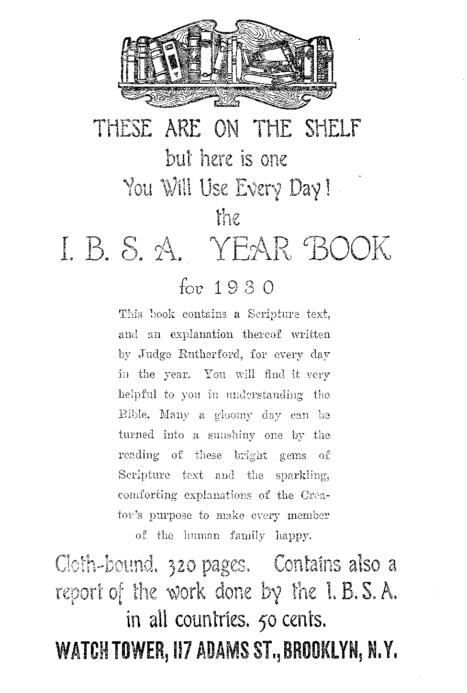

A JOURNAL OF FACT HOPE AND-COURAGE
in this issue
PALESTINE
EVENTS IN CANADA
LOGANSPORT, INDIANA
MORE ABOUT LATVIA
COURAGE APPROVED
LET US BE FAIR
RIGHTEOUS GOVERNMENT radio lecture on good government, by Judge Rutherford
EVERY OTHER WEDNESDAY
5c a copy - $1.00 a year - Canada & Foreign $1.50
Volume XI «■ No.267 December 11, 192 9
Contents
Labor and Economics
Julius Klein on Distribution
172
173
171
173
181
190
New Orleans Street Car Strike
Social and Educational
Indians Respond to Eight Treatment .
The Memphis Settlement Industrial Home The Gestatorial Chair ....... A Keen Nose for Garbage ...... WITHDRAWING FROM BABYLON .....
Finance—Commerc:
The Samuel Insull Interests .............. 170
Airplane Flies from France to China ........... 171
New York’s Largest Banks.............
Logansport and the Power Trust ............. 173
Political—Domestic and Fodu'on
Palestine in the Day’s News ....
Public Safety in Italy ................. 171
Polities and the Church Control Teachers . . . . . . . . . . 172
The Dictatorship in Yugoslavia ............. 172
Something More About Latvia. . .
. Science and Invention
The Fultograph Weather Chart ...
G-old Produced from Lead . . . . . . . . . . . . . . .172
Home and Health
Blessed Are the Sincere and Courageous
Experience with the Grape Cure .......
Let Us Be Pair to the M.D.’s .............. 179
Tbavel and TJiscu.lant
Religion and PniLosornw
THE AMERICAN-EV 3 31 KTuTmTH b urarra
Questions and Answer? is a r a ....... .
An Appreciation .................. 190
Published every other Wednesday at 117 Adams Street, Brooklyn, N. Y., U. S. A., by WOODWORTH, KNORR & MARTIN
Copartners and Proprietors Address: 111 Adams Street, Brooklyn, N. 7., U. S. A. CLAYTON J. WOODWORTH.. Editor ROBERT J. MARTIN .. Business Manager NATHAN H. KNORR.. Secretary and Treasurer
Rive Cents a Copy—§1.00 A Year Make .Remittances to THE GOLDEN AGE Notice to Subscribers: We do net, as a rule, send an acknowledgment of a renewal or a new subscription. A renewal Mank (carrying notice of expiration) is sent with ths journal one month before the subscription expires. Change of address, when requested, may be expected to appear on address label within one month,
I’oreign Offices
British ............. .11 Craven Terrace, London, W. 2, England Canadian .. . ........ 40 Irwin Avenue, Toronto 5, Ontario, Canada Australasian . . T Beresford Ed., Strathfield, Sydney, N. S. W„ Australia South Africa ............ 6 Leila Street, Cape Town, South Africa
Entered as second-class matter at Brooklyn, N. Y., under the Act of March 3, 1879.
asca&esosaaas
Volume XI Brooklyn, N. Y., Wednesday, December 11, 1929 Number 267
Palestine in the Day’s News
THE little country at the eastern end of the
Mediterranean Sea was originally called Canaan, which name it evidently owed to the descent of its inhabitants from Canaan, a grandson of Noah. The present name of Palestine is from a Hebrew name which means “Land of the Philistines”.
Moses described it to Israel as “A good land, a land of brooks of water, of fountains and depths that spring out of valleys and hills: a land of wheat, and barley, and vines, and fig trees, and pomegranates, a land of oil olive, and honey”. (Deut. 8: 7, 8) It is all of this today, with abundant evidence that it wras much more true centuries ago and will be more true again.
The whole land bears evidences of having once been well watered. The remains of terraces, cisterns, and wells show that the water was regulated and distributed. The forests which once covered considerable portions of the land have all been destroyed, but are being replanted.
The ancient wells, Hagar’s well, the fountain in Jezreel, the well of Abraham, at Beersheba, the three wells of Isaac, the well of Jacob, near Joseph’s tomb, the well of Bethlehem, which David knew so well, and the well of Sarah, near Hebron, all mentioned in the Scriptures, are still in use and held in veneration. Elisha’s fountain still pours out its refreshing current.
There are several permanent streams which do good service in the districts through which they pass, but the Jordan is the only one worthy of the name river. The Jordan originates in streams that come from Lebanon and Hermon and unite in the waters of Merom. In its course of seventy miles direct it winds nearly three times that distance. It is always well supplied with wmter, and is one of the country’s great assets, for Palestine has no coal and no oil deposits worthy of exploitation.
Palestine is well described by Moses as ‘a
land of hills and valleys’. There are plenty of both. Mount Hermon rises to a height of 9,100 feet. The land in general is mountainous. The Esdraelon plain, or valley of Jezreel, is a fine plain of considerable extent, fertile and well cultivated. The soil of limestone is hot and rich. The land is full of caverns and grottoes. .
The cave of Adullam, five miles south of Bethlehem, extends for miles and would accommodate hundreds of men. The air within it is remarkably dry and pure and warm. The one small entrance, half-way down the almost perpendicular face of a precipice, is reached by a shelf or ledge of rock, along which one has to find his way cautiously to the cave. Here David and his warriors hid from the pursuit of Saul.
Trees—Climate—Animals
Among the trees native to Palestine are the cedar, oak, ash, olive, palm, sycamore, oleander, and walnut. The Jaffa oranges have a worldwide reputation. Watermelons and almonds are grown for export, as are also barley, lentils, beans, lupines and sesame. Wheat production is rapidly increasing, but is still not large enough to satisfy local needs. Grape vines, long neglected, are being replanted. Early vegetables are grown to advantage in the Jordan valley near Jericho, and can later be exported in great quantities.
The climate is hot and irregular, ranging from 25 to 112 degrees Fahrenheit. The rain comes almost entirely in the period from November to April, inclusive, and varies from six inches in the south to twenty-six inches in the north. The soils in the valleys hold the water remarkably well. Plants are still green and vigorous after as much as four months of dry weather.
The lion and the unicorn, that is, the aurochs, are no longer found in Palestine, but the wild boar is common, and the wolf, hyena, jackal, leopard and bear can still be found. There are 163
GOLDEN AGE
over 350 species of birds, including an immense number and variety of the larger birds of prey. Reptiles are numerous. Fishes are abundant in the Jordan and are still to be found in the Sea of Galilee in immense shoals.
The human population is of a very heterogeneous character, and is constantly becoming more so. At one time the land sustained at least three million people. Today it provides homes for only 800,000, of whom about three-fourths are Arabs. The war gave it 774 miles of railways. There are 523 miles of public highways. When the breakwater at Haifa is completed, Palestine will have one of the finest harbors on the Mediterranean.
The Dead Sea Treasure-House
The Jordan and six other streams pour 6,500,000 tons of water daily into the Dead Sea, and there is no outlet. The lake is eight miles wide and forty-seven miles long. Its maximum depth is 1,278 feet. Its surface is 1,300 feet below sea level, making it the lowest and hottest surface in the world. The density of the waters, pure water being 1.000, varies from 1.160 to 1.230. There are ancient shore lines on the surrounding hills at a height of 1,200 feet above the present surface.
It is estimated that the ancient Asphaltis, as the Dead Sea was once called, contains 1.300,000,000 tons of potash, worth $70,000,000,000, besides vast quantities of asphalt, sulphur, magnesium, potassium, chloride, aluminum oxides, and common salt. The concession for working these deposits has been granted to Major Tulloch, a British engineer, and Novemeysky, a Palestinian chemist.
Work on the concession has already begun. The waters will be collected in huge shallow reservoirs and allowed to evaporate. The potash and other substances will be extracted by chemical processes from the solids which remain in the tanks. At first the minerals recovered will be taken by truck to Jerusalem, for shipment by rail; but if results warrant, a special railway will be built up the Jordan valley to Beit Shan, on whose walls the Philistines nailed the head of Saul. Beit Shan is on the railway line to Haifa.
With unlimited quantities of chemical fertilizers at her door at cost price, there is no reason why Palestine should not flourish even more than of old. The Dead Sea thus becomes Palestine’s treasure-house. The silvery sparkle of the waters of the Dead Sea, arising from their saline and bituminous composition, give them a remarkable brilliance and make the scene an attractive one to the eye.
Jews in the Promised Land
The best history of the Jews in the promised land is to be found in a book widely circulated, usually printed on thin paper and bound in limp covers. In bygone days it used to be on the parlor table, and was used as a place in which to press flowers, to keep locks of hair, and to hide money where there would be no danger of its being disturbed.
The city of Jerusalem was destroyed in A.D. 70. Three years later the last remaining fortress, Masada, was taken, but not until its defenders had burned the palace and committed suicide. In despair of ever really conquering the Jews, the Romans expelled every la.st one of them from Palestine in the year* 134 A.D., after Bar Coeheba’s revolt.
During the Spanish Inquisition the Turkish sultans granted asylum to the Jews, and ever since that time there have been in Palestine a few thousand Jews who have eked out a miserable existence, supported largely by funds sent to them by their brethren in Europe. Pogroms in Russia speeded up Jewish immigration into Palestine in 1881-1882.
In 1919 the British government was given a 25-year mandate over Palestine, and before that, by the Balfour Declaration, had invited Jewish colonization. As a consequence, many thousands came in, the Jewish population more than doubled, and Zionists began in earnest the building'up of Palestine as their own homeland, and have made wonderful progress, as our readers well know.
At the present moment, and for some years past, conditions in Europe are favoring the emigration of the Jews to other lands. Six or seven million Jews are suffering in Russia, Poland, Hungary, Lithuania, Rumania and Czechoslovakia as they have not suffered for centuries. Practically all avenues of employment are closed to them. America is closed by immigration restrictions. Emigration to Palestine is practical, and necessary, and in fulfilment of prophecy, but it has its obstacles.
In May, 1921, an Arab sheik suddenly swooped down on one of the new Jewish villages, Petach Tikvah, and killed four young men, hoping thus to drive the Jews from lands which they had purchased. There has been much unemployment, but that is now two years in the past.
A Few Notes on Zionism
The first Zionist Congress, called together at Basle, in 1897, by Theodor Herzl, laid down the famous Basle Program that “Zionism strives to create a legally secured, publicly recognized home in Palestine for the Jewish people”.
A previous effort to start Zionism in America almost broke up in a riot. America has never taken a proper interest in this subject. The Jews here are too prosperous. There are 80,000 Jewish farmers in America, tilling a million acres, worth $150,000,000, and they have no desire to leave these comforts for the struggles they would have to endure in Palestine.
Nathan Straus, the most prominent Jew in New ¥ork, and one of the finest men in the world, said recently:
While a few of the rich Jews, who serve every noble humanitarian cause, have also aided us in the task of rebuilding the Holy Land, too many of them have displayed shameful indifference toward this greatest of all causes with which the fate of the Jewish people is definitely identified. The enemies of Zion arc just now trying to magnify our difficulties in Palestine and the mistakes they claim have been made there. They are also endeavoring to minimize our achievements. The economic crisis in Palestine is interpreted by these enemies' of Zion as the collapse of the Zionist ideal. Nothing is further from the truth than this sinister propaganda. The only effective answer to all these attacks and criticisms against the rebuilders of Palestine is for all of us to consecrate ourselves with all our hearts and souls and our means to the sacred task which the Jewish people has assumed, which other nations expect us to perform, and which we dare not forsake.
On the celebration of his eightieth birthday, recently, Mr. Straus gave another hundred thousand dollars for reconstruction work in Palestine.
At the time of the last census of Palestine, in 1922, there were 591,000 Moslems, 73,000 Christians, and 83,794 Jews, but the number of Jews is now believed to be more than 150,000. Only 2,000 of these, however, are Americans, showing America’s lack of interest in the subject.
But Zionism as a whole is a reality. In ten years Jewish colonists in Palestine have doubled their numbers, doubled their holdings, and more than doubled their industries. Hebrew has been established as a national language. A Hebrew currency has been put in circulation, and immigrants are giving up their old Slavic and Teutonic for Hebraic names.
All in Palestine are equal. There are no upper and lower classes. Business and professional men and women have worked as laborers in building up the country. A great Jewish university has been established. An immense power plant has been installed in the upper Jordan. Nothing can stop the new era for Palestine that is under way.
An interesting fact about the Jewish colonies is that twenty of them are communal, which is the ancient and successful method of preventing extreme poverty. Individual settlers are given the usufruct, but not the outright ownership of the land: thus the ground rent accrues to the benefit of the community rather than to speculators.
There is a widespread belief among the Zionists in Palestine that the coming of the Messiah is at the door; and the best of it is that they are right. Not only are Zionists near the fulfilment of their hopes, but so are all the rest of the world.
Britain’s Promises in Palestine
In 1915, in order to disrupt the Turkish empire, Britain promised the Arabs that they should have title to Arab lands. The Arabs entered the war the next spring on the side of the Allies. A year later, November 2, 1917, Mr. Balfour, without submitting his declaration to either the British nation or British Parliament, made the following statement:
His Majesty’s Government view with favor the establishment in Palestine of a national home for the Jewish people, and will use their best endeavors to facilitate the achievement of this object, it being clearly understood that nothing shall be done which may prejudice the civil and religious rights of existing non-Jewish communities in Palestine, or the rights and political status enjoyed by Jews in any other country.
The Arabs were not honestly treated. Feisal’s Arab cavalry captured Damascus: it was given to the French. Arab troops helped to conquer Iraq: to all intents and purposes Britain took it for herself. They helped to take Palestine: Britain gave it to the Jews, and did it before it was even in her own possession.
When Lord Balfour realized the situation Britain was in, he opposed having England made the mandatory power for Palestine. He would have preferred the United States, or America and Britain conjointly, but the present British colonial minister states that the British government now has no intention of giving up its mandate or departing from the principles of the Balfour Declaration. Ultimately, however, the mandatory powers are supposed to retire from all the mandated countries ■—when they have to.
Inconsistency of Administration
Britain never closes her eyes to the fact that somehow she must get along with several millions of Moslems, in Egypt, Palestine, Iraq, India and elsewhere, and they are not the easiest people to get along with, especially when they have been lied to and deceived.
The British administration in Palestine has tried to get along by conciliating the 591,000 Moslems, at the expense of the 150,000 Jews. As a rule, government enterprises employ only Arabs, the Jewish workers being left out in the cold. No Jews have been employed on public works at Jerusalem, and out of 600 workers at the Haifa port excavations only four were Jews. This may bo good politics, but it is unfair, and provocative.
Under the British administration, and with the influx of Jews, the Arabs have greater markets for their produce, more money, more employment, rising standards of life. The charge has been made that their anti-Semitism has been encouraged by British administrative officials and high churchmen. If so, the latter are responsible for a great tragedy, and God will hold them responsible for what has recently taken place in Palestine.
Colonel F. II. Kisch, chief of the Palestine Zionist Executive, said: “We are convinced that were it not for the circulation of deliberately false reports calculated to stir their feelings in matters of religious sentiment, the Arabs of Palestine would have continued to live in peaceful relations with their Jewish neighbors, as is still the wish of an overwhelming majority of the Arab population.” We are not sure as to the meaning of these words. Probably Colonel Kisch feared to make them more pointed, more definite, but they plainly hint at treachery in high circles.
A writer in the San Antonio Express goes a step further and says:
After five extended visits to Palestine in the capacity of observer and student of events, I believe the first blame for the past, present and future tragedies in Palestine must fall upon the entire British policy in that unhappy little land. This is not said to clear Zionist or Arab leaders, and others, of their share, for they have a share, but primary responsibility rests with the British. Their entire policy in Palestine, from the famous Balfour "Declaration of November, 1917, up to the present controversy over the Wailing Wall, is false, self-contradictory, hypocritical and inevitably leading to the organized attacks upon Jews in Palestine.
That is plain enough and indicates that the two-faced hypocritical school of Tory statesmanship has about had its day. One thing is sure, and that is that in the recent troubles which have ravaged Palestine from Dan to Beersheba the British have failed to give the Jews the protection they promised.
Britishers themselves are calling attention to another item, and that is that the British Mandatory Government has done nothing to improve bad conditions of work of long standing, such as bad sanitary conditions, intolerable ill-treatment of workers by foremen, and changes for the worse in such matters as holidays, sickness pay, workmen’s compensation, low wages, long working hours and non-payment for overtime. .
Railwaymen in Palestine are refused trade union recognition and have no voice in fixing wages, and the circumstances under which they work are declared to be scandalous. The fixing of working conditions rests entirely and exclusively with the railway management, which, as usual, is selfish and cruel, and is humane only when it has to be.
On the subject of Britain’s responsibility for the recent massacres, a Jewish veteran of the World War, writing in the Detroit Neivs, said:
Regarding the present race riots between the Arabs and Jews in. Palestine (although the correct term would be massacre of Jews) I must say the blame does not rest on the Arabs but on the British government at large and especially on the local Palestine British officials.
We must go back in history to show the reason. In 1917 during the war, England was in a tight pinch and looked for help everywhere. There His Majesty’s government gave out a document known as the Balfour Declaration, promising the Jews to assist in establishing a Jewish homeland in Palestine. Needless to say this buoyed up the hopes of the Jews and the British government got the sympathy of a good many Jews in all the allied lands. One of the helps it received was the forming of Jewish Legions of which about 6,000 enlisted from the United States and about 3,000 in Palestine, outside of other countries.
I, having been born in Russia, and having lived through two massacres there, was one of the fools who enlisted in the Jewish Legion. I know to a certain degree the nature of the Arab. As well as any half-civilized people, the Arab is not ripe to control himself and if he is shown that there is someone to take care of him he is the best behaved person. But should you give him the upper hand he doesn’t know where to stop. Of course I am not speaking of the educated Arab, but their number is very small.
Now the British administration, instead of helping to establish a Jewish homeland, did everything to hinder it. It suppressed manufacture by putting a tax on merchandise coming in and leaving the country, thereby making every article purchased in Palestine dearer than imported articles, so that most of the Jewish factories failed. As raw material had to be imported into the country, merchandise produced was double taxed.
Out of all the crown lands belonging to the government, thousands of acres were given free to the Arabs and not one inch to the Jews, not even to the Jewish former soldiers in the British army. Every piece of farm lands that the Jews settled had to be nircliased from the Arabs at double and triple the worth, making it almost impossible for the Jews to settle on land.
Every nationality and creed is allowed to come into Palestine in unrestricted numbers, but to hinder a Jewish homeland the British government has restricted the Jewish immigration to from 2,500 to 6,000 per year, whereas the native Arab increase is about 10,000 a year. And besides, every Jewish immigrant has to show 500 pounds, or $2,500, unless lie is backed by the Zionist organization with that amount.
Jews are taxed higher than Arabs but no help is received from the government for Jewish schools and hospitals, and the Arabs receive all the help necessary.
Hardly any Jews are employed on government work and almost all the Jews who got government jobs during 1917-18-19 were gradually squeezed out and the local British officers showed open hostility to the Jews.
When the Arabs started to build a gate in the Wailing Wall, the Jews protested and argued that it will give the Moslems an excuse to always pass through and disturb the Jews as they are praying, but the protest went unheard. The result was that as soon as the gate was opened the Arabs came and started to beat up the old Jews praying there, which gradually led to the present riot with its many killed and wounded.
Had the British government not made a scrap of paper of the Balfour Declaration and not openly shown its opposition to the Zionist aim to settle Palestine with Jews from countries where they were unable to live, or had it at least remained neutral like the Turkish government before them, it would never have come to the present crisis.
Lastly, about the British help to the Jews in Palestine. I’ll repeat the old proverb: “God save me from my friends—I’ll take care of my enemies myself.” The one who made that up must have had friendly dealings with the British government.
The Modern Jerusalem
Jerusalem is 33 miles from its port of Jaffa on the Mediterranean, 15 from the Dead Sea, 18 from the Jordan, 19 from Hebron, David’s first capital, and 35 from Samaria. It is 126 miles from Damascus. It is on the summit of the watershed between the Dead Sea and the Mediterranean.
The original city was built on several hills, but in the lapse of ages the intervening valleys have become filled and the city is now nearly level. The streets of the older part of the city are crooked, narrow, ill-made and dirty, but a new city which is in every way up to date is arising about the walls of the old.
Jerusalem was once noted for its weaving, pottery, and glassware, but today there is little trade, except in souvenirs of olivewood and mother-of-pearl articles. The old city is unsanitary and plague-stricken from dirt, bad water, lack of sewerage, and the unhygienic habits of the people. The city lies in the midst of an infertile, ill-watered district, once prosperous by irrigation. The present water supply is from rain tanks or pools within and without the walls.
In 1922 Jerusalem contained 8,000 Mohammedans, 10,000 Christians, and 44,000 Jews. The care of the ‘holy places’, all of which are spurious, has occasioned no end of trouble between the Roman Catholic, Greek Catholic, and other churches.
The “Patriarch of Jerusalem” is the keeper of relics which are valued into the millions. Aside from the gold and jewels with which these pieces of wood, supposed to be from the true cross, are embellished, they have a value in the eyes of millions which can not be computed in terms of money.
Much effort is made to attract and hold tourist traffic. There are municipal laws strictly limiting the size and location of billboards. Begging has been prohibited. Sight-seeing cars now speed the tourist to any part of Palestine to which he wishes to go. There is an ancient quarry beneath the city, from which its building materials were dug.
The Wailing Wall
The Wailing Wall is located on a pavement which belongs to the Arabs and is situated in an alley flanked on one side by the rear walls of yards and on the other by the western wall of the ancient temple, sixty feet high. This wall was a retaining wall of the temple proper.
For hundreds of years the Arabs have allowed the Jews to come here and mourn "for majesty that is departed, for walls that are overthrown”. Men and women mourned together, but a Galician rabbi started a trouble by insisting that a screen must be built between them. The Arabs, clearly within their rights, objected strenuously to the building of the screen. They said that if the Jews were allowed to build a screen, the next thing would be their putting a building over the screen, and soon the land would be lost to its rightful owners.
The matter was complicated by professional waiters, hired by less devout Jews to wail for them. AVailing steadily is hard work. The older men in the business started to build themselves benches. The Moslems objected to that also. A compromise was reached by allowing the professional waiters who are old to carry onelegged chairs strapped to their backs.
The quarrel was reopened this year. Some Jewish, youths held a meeting below the Wailing Wall to protest against last year’s interruption. The Arabs held a meeting to protest against the protest, and sent out word to all the countryside to come in and aid in the demonstration. The police were unable to cope with the trouble that followed. Indeed the Arab members of the force seem to have deserted their posts, knowing trouble would come.
Both Jews and Arabs lay blame on the others for the riots that ensued. Of the four stories that are told as to just how the trouble began it is hard to know which one is true, or if any of them is true. Two narrators seem to agree substantially that the actual riots began with a funeral of a Jewish boy killed by an Arab for stealing tomatoes from his garden.
A. commission of four members of Parliament is now conducting an inquiry into the causes of the uprisings, and the murders which followed. The sittings of the commission will be behind closed doors and it is not expected that a report can be issued before the end of the year.
Anti-Semitic Prejudice
It can not be denied that anti-Semitic prejudice is common the world over. Jewish doctors are discriminated against in hospitals and elsewhere. Hotels and apartment houses.will have no Hebrew patronage. Business concerns advertise that they want Christians only.
The Jew's, by their peculiarities, often invite trouble. In New York only two years ago an aged Jewess came to the synagogue in a taxicab. This is contrary to orthodox Jewish custom, and although she had been ill she was forced out into the rain and made ill again. Their conduct at the Wailing Wall is a sample of ecclesiastical foolishness.
Nevertheless, the Jews are progressive too, and their very progressiveness in Palestine has made them enemies. They are the most competent workers and got the best wages. Moreover, they have been doing their work with the aid of the latest machinery.
In the last three decades the number of Jews in the world has grown from 10,500,000 to 16,000,000. America, which had only 1,000,000 Jews in 1900, now has about 4,500,000. They are, in general, a law-abiding people. Of the 2,478 prisoners in Palestine prisons, only 81 are Jews.
The August riots in Palestine virtually amounted to a war. At one time there were 8,360 .Jewish refugees in Jerusalem, waiting until it was safe for them to return to their fields. At the same time forty-four Jews were imprisoned in the citadel of Acre, charged with murder by premeditated shooting.
The Jews have as many unfaithful teachers as other religionists have. The papers contain numerous accounts of their disbelief in the historical events narrated in the Bible.
Zionism, a Jewish Necessity
There are Jewish scholars who foresee that unless the Jews return to Palestine they will become extinct as a people. Some of the disintegrating forces are conversion to other faiths, intermarriage, a decreasing birth rate, and an unchanged mortality rate.
In spite of what has just happened, the Jewish people regard Palestine as the safest place in the world for them, and are dauntless and unafraid. They have faced pogroms in every country in the world except Britain and the United States, and some of them are putting their trust in the God of Israel that he will now deliver and bless his ancient people.
Items of interest to students of prophecy are that plans have been formulated for a concrete highway from Egypt to Palestine, via Sinai, following substantially the route taken by the Israelites in coming out of Egypt toward the promised land. Also that certain orthodox Jews have made application for a strip of land in Palestine whereon to build a temple estimated to cost $50,000,000. Neither of these enterprises is yet under construction, but the fact that they are contemplated is interesting.
Foliowing the recent riots, and prior thereto, prayers have been offered daily in some of the Jewish settlements that their Messiah will make his appearance and put an end to wars and strife. The Jews were encouraged that in the severe earthquakes which shook Palestine two years ago not a Jew lost his life. The Arabs were much impressed by this at the time.
The Sons of Ishmael
Who are these that have recently been killing one another in Palestine? The answer is that they are all sons of Abraham: the Jews descendants of Isaac; the Arabs descendants of Ishmael. Is there any good reason why cousins should kill one another? None at all.
As a matter of fact, until the World War, there was an age-long friendship between the Jew and the Arab, and the Arabs usually looked up to the Jews as being the “People of the Bible”, the holy book which the Moslems reverence next to their own book, the Koran.
True, the Arabs have never become reconciled to the Balfour Declaration, and this is not to be entirely wondered at; yet if the Arabs can think of the Jews as their blood relatives, as is actually the case, it ought not to remain a permanent source of trouble.
The British claim, and they are right, that there is ample room for both the Jew and the Arab in Palestine, and that the presence of an active and industrious Jewish colony is good for both. The Jewish self-assurance that the country is theirs has created antagonism, as has also the fact that large sums of money have come into the country exclusively for their use.
The Urge of Progress
For.centuries the poor Arabs of Palestine have lived on next to nothing, fearing to produce more than their absolute necessities lest their Turkish rulers would take away al] they had. A home rich enough to have two candles was almost sure to be looted by Turkish soldiers.
Now, suddenly, m come a people from every part of the world, with plenty of money to live and live well, and establish industry and commerce where the Arabs but a short time ago were starving. This has been a great strain on the Arab disposition. And, moreover, seeing his Jewish cousin with a motor car, he wants one himself. And he knows, too, that he outnumbers the Jew six to one.
The Arab is a born fighter, a born dreamer, and a born religious fanatic. He can not forget the time when he had a great dominion all over northern Africa, western Asia, and far into Europe—so far that all Europe bid fair at one time to be turned into a Moslem community. The Arab still dreams that some time Allah may give this kingdom back to him. He resents the Jew’s coming right into the middle of it and taking away the Holy Land, almost as sacred to him as it is to the Jew himself.
A delegation of American citizens of Arab birth recently called upon the American secretary of state, declaring that the way to peace in Palestine is the abandonment of Zionism, which, they argued, means a government within a government. They are twelve years too late. The die is cast.
Jio one can accuse the Arabs of being interlopers in Palestine. They have lived there for thirteen centuries. They have become mightily stirred over the whole question of Jewish hopes and prospects and are stirring one another up from India to Gibraltar with inflammatory declarations that Arabs are as much entitled to bar Jews from Palestine as Americans are to bar Japanese from America. It is the educated Moslem notables that are fomenting the strife, not the poor illiterate fellaheens, who do not know what it is all about.
There are still many highway robberies in Palestine, and Arabs are adepts at that kind of business. Arabs and Jews show their dislike of one another and their distrust of one another when Hey pass in the open road. When the strife was at its height eight thousand trees were uprooted on one 'Jewish farm, but, in most instances, the trees were not harmed.
The August Massacres
Our readers have already seen in the daily press the accounts of the August massacres, and there have been some since then too. Up to the end of August the total killed and wounded were, Christians 14, Moslems 203, and Jews 291.
At least a thousand families had their houses, farms, cattle, crops and all their personal possessions destroyed, burned or stolen. The desolations inflicted have virtually ruined every Jew in Palestine, undoing the work of over half a century.
Situated in the heart of the Arab countries of the world, their land being the bridge which connects all parts of it, it is hard to see how the new Jewish state can ever be established and become what the Bible shows it is to become without the direct intervention of Almighty God. It has certainly been abundantly proven that the British arm is incompetent to afford the necessary protection. The seriousness of the situation lies in the fact that a religious twist has been given to the Arab propaganda, and it is well known that in a holy w*ar a Moslem courts death. But for God’s blessing upon it, the outlook for Zionism would be very dark.
In the City of Hebron
Hebron, the ancient Kirjath-arba, twenty miles south of Jerusalem, was David’s capital for seven years. In it is the cave of Machpelah, where rest the bodies of Abraham, Isaac, Rebecca, Jacob, and Leah. The Moslems have built a mosque over the cave, but will not enter it, dreading immediate death at the hand of Abraham’s spirit, which they believe to reside in it. Hebron is one of the Moslem’s holy cities. There is no town in Palestine that has been as little disturbed for centuries as Hebron. In Hebron every Moslem woman still wears a veil.
On August 24 a huge mob gathered in Hebron, crying, “We must kill the Jews.” Immediately the invasion of private homes began, followed by harrowing scenes of massacre and pillage. Eighteen men and women were killed in one house. A man and his wife escaped by rolling themselves in the blood of others and lying motionless on the flo< ". Women and girls, and even a baby, were slain by the heartless fanatics.
Sixty-six persons, one-fourth of the Jewish population of Hebron, were slain. Fifteen of these were American students at the Hebrew University. One of these was a Brooklyn boy. Two other Brooklyn boys were wounded at the same time.
The New York Times of September 24 contains the following item which may or may not be a mark of divine intervention to ward off further attacks upon Israel, at least for a time. We publish it for what it is worth, incidentally remarking that none of our readers will believe that Abraham’s spirit is lurking in a Moslem mosque. But the very superstitions of these poor fanatics may be used to hold them in check until God’s due time to bring about Israel’s final chastisement. .
From Hebron, the burial place of the Patriarchs Abraham, Isaac and Jacob, which was recently the scene of a most barbaric slaughter, there comes an alarming’ story spread by Moslems there that is alleged to have struck great terror among’ them. Because of the slaying of 66 Jews, the report goes, the spirit of Abraham has been moved to wrath and nightly from his burial place at the Cave of Machpelah, over which now stands a large Moslem mosque, a low moaning is heard, followed by a wail, then words, uttered indistinctly at first, then clearer: “Why, Why did ye shed innocent blood? Ye sons of Israel, why have ye dishonored your Father’s name?” The emotional Arabs are said to be terrified and many of them are asserted to be seeking means to propitiate the wrath of the Patriarch.
The Samuel Insull Interests
THE Samuel Insull interests make electricity at about three-quarters of a cent a kilowatt hour and sell it to the millions of population of the Chicago metropolitan area at just about ten times what it costs. Meantime, Chicago city is broke and can not pay its own employees, but the Insull crowd has millions which it can use for any purpose whatsoever. It is now the pleasure of the simian press to explain to the people of Chicago why it is a good thing for Chicago to own nothing, but to have all its public utilities in the hands of a handful of private capitalists. And, furthermore, these private capitalists have shown their willingness to pay handsomely for service thus rendered to the cause of injustice and untruth.
The Fullograph Weather Chart
BY THE Fultograph apparatus an aviator may now receive within less than three minutes a wuather chart showing conditions of weather as they exist at the airport at which he is expecting to land. All German passenger planes will be equipped with this new invention.
Airplane Flies from France to China,
THE flight of Captain Coste, French aviator, from Le Bourget flying field to Tsitsihar, Manchuria, establishes a new record, covering 6,158 miles. The captain left France on Friday and landed in Manchuria on Sunday, after flying across two continents and a quarter of the way around the world.
Airplane Service to Boston
THE airplane service to Boston from New York city takes only one hour and forty-five minutes flying time. The planes carry four-teen.passengers and leave twice a clay, at 11.00 a.m. and 3.15 p.m. The Nev,7 York Central will soon install planes carrying thirty-two passengers by day and sixteen by night, for use on its transcontinental service of train and plane.
Keeping the Ancestors Posted
WHENEVER there is anything of real importance in Japan, like a declaration of war, the conclusion of a peace, the death of an emperor, etc., the matter is duly reported at a certain Shinto shrine, so that all the ancestors of the reigning sovereign will know about it. What a dull time those old birds must have sitting around in their tombs waiting for the latest news.
Public Safety in Italy
AN ENGLISH woman whose Italian husband had escaped from the island of Lipari, was seized, searched from head to foot, and locked in a damp and verminous cell in prison, and her husband’s brother was sent to the penal island of Lipari, all because of his escape. When a government has fallen so low that it must imprison the innocent in order to maintain itself in power, it has no depths to which to fall. It is groveling in the subcellar.
The Flower Fields of Grasse
BASSE, a city in the southern part of kJ" France, is the center of the perfume industry. In and about the city flowers of some sort are in bloom every month in the year. It takes five hundred pounds of roses to yield one pound of rose essence.
HBfiOO Stolen Automobiles
A UTOMOBILES to the number of 116,000 were stolen during the past year, of which number 85 percent were recovered, leaving the net loss from theft about $12,000,000. The thefts are greater in the fall than in the spring, due to the fact that owners take better care of new cars.
Values in New York Real Estate
NEW YORK has seven apartment houses the average assessment on which is $5,000,000; six theaters on which the average assessment is $4,000,000; eight department stores assessed each at $11,000,000; ten hotels assessed each at $13,000,000, and ten office buildings assessed each at $18,000,000. The Equitable Building is assessed at $31,750,000.
Skyscrapers Extraordinary
SKYSCRAPERS extraordinary are now in process of erection in New York city. The Bank of Manhattan Company has nearly completed a sixty-three story building which rises 840 feet above the street, while the City BankFarmers Trust Company will erect one seventy stories high which will have a height of 925 feet. Chicago has a garage twenty-eight stories high.
Indians Respond to Right Treatment
THE United States has 200,000 Indians in dire need, but when 3,000 of them were given employment as laborers in the cotton fields of Arizona, and thus were able to supply themselves with needed food, it was noticed that there was a remarkable decrease in trachoma and tuberculosis. It seems that to enable these red men to have sufficient food is the first duty of the white men that have taken away their lands.
Egypt and Iraq
THE Labor government of Britain has greatly improved conditions in the Near East by the new and liberal promises it has made to Egypt and Iraq. British troops will be transferred from Cairo to the Canal Zone, and British officers removed from the Egyptian army, and Britain will advocate the admission of both Egypt and Iraq into the League of Nations.
President Wilson’s War in Russia
THE bodies of 128 soldiers of the United
States army who fell in Archangel, Russia, in the private war which President Wilson fought with that country in 1918, are being returned to America for interment in a special cemetery in Detroit. This war was what was previously called the acid test of America’s friendship for a downtrodden and oppressed people trying to find a better form of government.
Politics and the Church Control Teachers
THE Teachers’ Union has issued a letter declaring that the schools of New York city are under the control of politics and the church. The letter in which the charges are made says: “Appointments to high-school principalships continue to go to candidates who are able to offer chiefly the qualifications .of having the direct support of a political organization—specifically, Tammany Hall or some important spokesman of that political power. If in addition a candidate has powerful religious affiliations, his chance of being selected is greatly increased.”
Julius Klein, on Distribution
Julius Klein, assistant secretary of commerce, recently said: “There are elements of a new industrial revolution in the United States. The yearly output of the American worker is $5,200, and of the European worker $1,500. Under such conditions, except for rare instances, there is no excuse for poverty in the United States. The problem before us is one of distributing income justly and equitably. Yet large numbers of American working people, both men and vzomen, are not making a living wage. They are being thrown out of work instantly when orders slacken. They are considered too old to work at an early age.”
New York’s Largest Banks
TN GROWING- to their present size New
York’s fifteen largest banks have swallowed up one hundred and thirty-two other banking institutions and are now engaged in the absorption of one another. The year 1929 will stand out as the banner year for big bank mergers, and there is not much farther to go until all the credit of the country will be in the hands of one institution.
The Dictatorship in Yugoslavia
rpHE Manchester Guardian reports that for seven months Yugoslavia has been like a cemetery. Parliament is dead; the press is dead: the newspapers are allowed to express no opinions of their own, and newspaper men are allowed to stay in the country only if they pledge themselves to write only such articles as are favorable, or at least not unfavorable, to the dictatorship.
Gold Produced from Lead
fy. GERMAN plumber has been in prison nine months for having induced others to invest in a plan for extracting gold from lead. Insisting on his innocence he was brought out of prison, and in the presence of the mint director, an assistant, two detectives, the state’s attorney, and the examining judge he succeeded in producing one-tenth of a gram of purest gold from one and two-thirds grams of lead. The fact that the man has been imprisoned for his discovery suggests that it is genuine. That is a gentle way that the world has with its great inventors and discoverers.
Causes of Prison Outbreaks
Charles Brandon Booth, of the Salvation
Army, declares that the prisons of the United States are the most degrading and impractical of any prisons in the world: that in the federal penitentiary at Leavenworth three thousand men must be housed and fed in quarters and on a food allowance originally designed for eighteen hundred, and that he knows of a cell block housing six hundred men where every man who goes into it is virtually doomed to consumption. It is interesting to observe that the Bible discountenances the whole prison system and that in the Mosaic law there is no provision for penal institutions at all.
New Orleans Street Car Strike
HE New Orleans street ear strike was peculiar in several respects. It is perhaps the first time that a street car strike has been the subject of adjudication by a federal judge, and the first time that federal troops have been called out to serve as strike breakers, and yet. after all, the carmen won their strike. They did this because, for sixty-five days, the public refused to patronize them. Business houses, owners of automobiles, and practically the entire city, cooperated to help the carmen.
The Memphis Settlement Industrial Borne
HE Memphis Settlement Industrial Home, recently burned, was, according to charges recently filed, a place where poor little Negro children were punished by being placed on hot stoves and made to stand on hot coals and in hot ashes. Further, it is alleged that seventyseven children were entered in the school, with no record of their discharge. Of the eightyeight children reported in the orphanage when it burned, only forty-four could be located. Many Memphis people are strong believers in eternal torture.
A Kind Chicago Judge
WHEN a former stage star became ill and friendless in Chicago and was finally brought into court for stealing a dress, she explained to the judge that she was forced into it, not being able togeta job unless well dressed. The judge, in kindly words, recalled her past usefulness, and offered help, but the woman, with fine pluck, merely asked to be dismissed, and promised to again face the world undaunted and unaided. Such a woman is morally miles above the millionaires that form the Power Trust.
A 79 Ad ear-Old Vagrant
FINE old man, 79 years of age, was in court the other clay in New York. He had been an orderly in a hospital, and a good one. Then he got a job taking care of a private patient, but at length the patient died. Friends and relatives had taken the old man’s money, and at length he was left upon the street. He slept for four nights in an untenanted house, when nuns in a parochial school across the street had him arrested for vagrancy. This reminds one of the story of The Good Samaritan. Or does it?
The Gestatorial Chair By Henry Ancketill
ON PAGE 589 of The Golden Age of June 12, 1929, in a paragraph dealing with the blessing of the world by the pope, the latter is described as being robed in white and wearing a gold tiara, seated within the “gestatorial chair”, borne by eight bearers, and the question is asked, “Can somebody tell us what the vrord 'gestatorial’ means, when used in this connection?” '
It is probable that it is related to the use of an ecclesiastical utensil, such as a portable shrine to be borne in religious processions, which in the Middle Ages was known as a ‘“gestatorium”; or possibly owing to the association of the w’ord with pregnancy in medical service, it may have a more interesting or vital historical origin.
It is a well authenticated fact that in the ■year 855 A.D. a woman was elected to.the papacy, and "was known as “Pope Joan”, otherwise John VIII. She is said to have been an English girl, who fell in love with a monk. Assuming masculine attire, she accompanied the monk to Rome, and the cardinals, believing her to be a man, elected her as Pope John VIII. The deception, however, was not of long duration; and on her secret being discovered, she was put to death.
Of course if there had been any real truth in the Roman Catholic doctrine of apostolic succession, this incident would have destroyed the validity of its claim for ever!
It is, however, I understand, an open secret, that to prevent possibility of its ever occurring again, the papal chair was constructed so as to allow a duly qualified official to determine the sex of the occupant before consecration, a portion of the seat of the chair being left open for that purpose. To distinguish such a chair from all ethers, may it not have acquired the name cf the “gestatorial chair”?
EVER and anon in “Toronto the good”, of which Scarboro is a suburb, the civic authorities, at the instigation of the clergy class and their simple-minded dupes, strive to stop the Kingdom message’s being proclaimed to the people by the Bible Students on Sunday. Recently the following item appeared in one of the local Toronto papers under a very prominent heading, “Loyal Scarboro Angered by Anti-League Booklets.” The item reads:
Loud protest is being made by the residents of South Scarboro over the distribution of booklets in Kennedy Heights and Sandown Park on Sunday that are alleged to contain anti-British propaganda. Particular objection is taken to a paragraph in which the following statement is made:
“The father of the League of Nations is Satan, the devil. The British Empire is its mother, and the other nations are wet-nurses. The preachers, professional politicians and the profiteers really form the League, and the clergy act as spellbinders to lend some sanctity to the arrangement. ’ ’
An examination of the booklet, which is named “The Last Days”, revealed that it was published in Brooklyn, New York, by the International Bible Students’ Association Watch Tower, Bible & Tract Society, and was distributed from the Toronto office at 40 Irwin Avenue.
A complaint has been made to the Scarboro police, ■who have announced their intention of making an investigation. Inspector David McKinney of the Moral- ■ ity Department, Toronto Police Department, when called tonight, stated he had not seen a copy of the booklet, but announced his intention of placing the matter before the Crown Attorney.
The opposition to the work of the Bible Students, however, is not confined to Toronto. The Chesley Enterprise contains an article telling of how the activity of a humble follower of the Master aroused the ire of a member of the “cloth” in Walkerton, Ontario. The article follows :
It is not often that a pulpit in Walkerton has rung out a greater denunciation against a member of either sex than that which emanated from Knox Presbyterian pulpit on Sunday morning last, when the pastor, Kev. R. G. McKay, launched a spiritual harpoon against the lineal descendant of the daughter of Eve who has been making a house-to-house canvass in ■Walkerton, selling what the minister maintains are veritable heresies against the fundamentals of the Bible.
A sample of the moral slush contained in the books that the lady has been selling around is found in a passage asking with much gusto, “Who is Immortal?” and which goes on to say:
“The Devil himself is not immortal, because the Scriptures show that God is going to destroy him in due time. (Hebrews 2:14; Ezekiel 28:18.) We might with propriety propound to the preachers this question : If hell is a place of eternal torment, and if the Devil is the chief fireman, who is going to keep up the fire when the Devil is destroyed?”
It’s enough to make more than preachers see red to be confronted with such blasphemy as has emanated from the late Pastor Russell’s Watch Tower at Brooklyn and which stuff is being sold about the country by a society parading under the imposing title of the “International Bible Students’ Association.”
As Rev. Mr. McKay said, he placed some of these books on his library shelves alongside “The Book of Mormon”, and he did so with sincere apologies to ‘ ‘ The Book of Mormon. ’ ’
And thus the Truth is spread abroad and God makes the wrath of man to praise Him.
The Border Liquor Traffic
The prohibition question has been a great question in Canada, even as it is in the United States, and the question of whether or not the Canadian government should give clearance papers to rum-running boats that ask clearance for Cuba and. other countries when it is well known the destiny is the States is one that is causing much controversy on both sides of the border. The Sentinel contains the following interesting article on the subject:
The House speeded up last week to the near finish of the session. It was an unusually interesting period, several matters engaging the attention of the House that have been exciting public discussion. The question of refusing clearance papers to rum-running boats carrying liquor to United States ports occupied a day. It produced information that was somewhat sensational, and which was used to justify the Government in refusing to accede to the request of the United States that Canada should prohibit the export of liquor. The debate was introduced by Mr. Woods-worth, who argued for the refusal of clearances. He was supported by but few members after Mr. Euler, the Minister of National Revenue, had given a long explanation of the activities of his department, and exposed the failure of the United States to enforce the law against the rum-runners. He startled the House when he told of going out from Windsor on a launch in the Detroit River and watching the operations of the rum-runners. He saw liquor cargoes carried across the river in boats owned and operated by American citizens, delivering the liquor a short distance from the American custom house, and no effort
being made to prevent the illegal traffic. His departmental officials reported to him that similar conditions prevail at Bridgeburg, on the Niagara frontier. He argued that if the United States authorities desired they could put a stop to the traffic in a week. That being the case, he did not feel that Canada was under obligation to enforce the laws of the neighboring country. At the present time American officials are permitted access to the docks on the Canadian side, and get the information as to when the boats are ■clearing for their ports. That, Mr. Euler said, was as far as the Government of Canada should go in cooperating with the Americans in the enforcement of their own laws. To refuse clearance to the boats carrying liquor cargoes across would put the onus for enforcement on Canada, while it rightly belonged to the Government of the United States.
One of Canada’s leading newspapers, the Toronto Star, although a supporter of the party in power, criticizes the government’s position in no uncertain terms. Editorially it says under the caption “A Dangerous Situation”:
A condition of affairs which everyone, even the most wilfully blind, must recognize as internationally dangerous has arisen on the rum-running border on the Detroit river.
The outlaws who carry contraband liquor across the water are armed. The officers of the law who come in ever-increasing numbers, bringing more and more preventative vessels into use, are armed. The shooting has begun in real earnest. Already it is charged that shots fired from the Canadian shore have struck United States revenue cutters in United States waters. The charge may not be true, but is little less serious for that reason. Already shots from revenue boats have struck houses on the Canadian shore. In one or two cases innocent persons have been killed or ■wounded. It is announced that 200 more men and 10 more vessels will at once be put on this “border war” work by orders from Washington. Deputy-Commissioner Cuddy advises the Ontario government that coast guard cutters should be placed on patrol in the affected Canadian waters.
The scene is being set in every detail, ready so that any born fool or malicious person may strike a match that will start a conflagration that would, on the instant, almost be beyond control.
For a year past the Star has been warning the government of Canada that this dangerous state of affairs was taking shape and was certain to arrive, and we have urged Canada to wash her hands of complicity in the lawless trade across her border—by refusing any longer to grant customs clearance to liquor that is to be smuggled by armed men into a friendly neighboring country.
Canada needs to have clean hands in the situation that is upon us. On one side of the border is a. nation of one hundred and twenty million people; on this side a people of ten million. Some tell us that the trouble is not ours, that we have nothing to do with it, that the conflict is between those people in the United States who v/ant liquor and those who do not want it. But one scarcely needs to have read any history at all to know that when real trouble starts along a border sooner or later the whole weight of the trouble falls the way it is shoved—the more powerful nation disposes of it by shoving it on the weaker. Let the situation increase in seriousness and we shall see this done.
This country needs clean hands at this time and hasn’t got them. Armed law-breakers are carrying liquor into the United States, battling with armed police (may be battling soon with U. S. Regulars) and the liquor shipments over which this war is fought is Canadian liquor sold to outlaws to be smuggled with the sanction of Canada into the United States contrary to its laws in defiance of its armed guards. Inspector Cuddj^ advises the Ontario government that a patrol of Canadian revenue cutters should be on the scene—ostensibly to prevent the short-circuiting back into Ontario of the liquor which Canada has sold the rum-runners and granted them clearance to smuggle into the United States. Would it not be simpler to go out of the business altogether? Inspector Cuddy assures his superiors that he does not believe a single Canadian boat or a single Canadian is engaged in the rum-running trouble. One would like to share this faith in one’s countrymen, but no doubt we have a few men as adventurous and as fond of big profits as anybody else. No doubt nearly all this traffic is now carried on by men from beyond the border, gun-toting, hard-boiled men who have, or who think they have, the backing of men higher up, who have political pull and able lawyers in the courts supposedly capable of getting their hirelings out of any trouble they may get into. With a new administration at Washington this reliance may prove to be a delusion.
The speech made by Hon. W. D. Euler a few weeks ago was a cool and reasoned argument that Canada had done something towards assisting the United States to deal with liquor shipments into that country, and that the United States had, evidently, done little herself to check the inflow. That 'speech put the whole matter up to Washington. It is clear enough that President Hoover and his cabinet, in view of this speech by a Canadian cabinet minister, have set out to change the situation as “complained of” by Canada. A total force numbering nearly eight hundred men will be employed on land and water to cope with those outlaws who use the Canadian shore as a base. These men and the vessels they use will be armed to fight with outlaws vflno are armed. A border that has been unarmed for a hundred years is, on account of liquor, suddenly alive with guns. '
Can we deceive ourselves for a moment by claiming that we have no responsibility for these armed outlaws—we sell them the liquor, sanction their purpose, guard them to the water’s-edge in the trade they carry on ? Is it not nonsense to suggest that the affair is not ours? It is ours. The consequences of it will, when they pile up, be mostly shoved on us.
The Shrinking Continent
Nothing is more rapidly breaking down national prejudice and giving the people international minds than the immense amount of traveling that is taking place the world over. As people visit other lands and meet with the people of those lands they find more and more they are all one “under the skin” and as a consequence are less inclined to be stampeded into killing one another at the instigation of politics, big business, and the preachers, the unholy trinity. The automobile and airplane are doing much in this good work. The Vancouver Sun, in an editorial entitled “Airmen—And . A New Era”, says:
One of the peculiar things about human nature is that it will accept almost any kind of change if the change comes unannounced.
For instance: If a group of energetic, restless young' men should come on the scene and announce that they were about to remake the whole continent, so that countless old customs and habits would be wiped out and all the cities and towns would be moved closer together, we probably would resent it very firmly.
But when they simply go ahead and do it, without saying anything about it, we don’t mind—indeed, we rather like it. Instead of defying the young men who are pushing us bodily into a new kind of society, we applaud them.
The aviators are doing just exactly that. When they get through with us Canada, in common with the rest of the world, will be very different from its old self. The change, probably, will be for the better; but we won’t even realize that there is a change until after it is accomplished.
Read this little news dispatch from a recent paper: “Edmonton, Alberta—When ‘Pinch’ Dickens, Edmonton flyer, brought his monoplane to a landing on the Edmonton flying field the other evening he completed a notable flight of 1,600 miles from Fort Good Hope on the rim of the Arctic circle. The plane carried a valuable consignment of furs from the northern parts.”
In those two sentences there is compressed a volume about the new order that the aviators are bringing.
The Champion Jabberers
Do Canadians talk too much? An official report from Ottawa informs us that “Canadian citizens talk more over telephones than do any other people. A recent survey showed that the per capita, use of the telephone in this country was 221 conversations a year. The next highest user is the United States, whose citizens use the telephone 205 times a year. Denmark is third, with a per capita usage of 137 calls a year”.
Something More About Latvia By M. Auerbach
T N A recent issue of The Golden Age there is -*■ an article entitled, “Impressions of Latvia,” by D. L. Cranston.
As we are from Latvia, we read it very carefully. We did not find anything wrong with the ■write-up, except where Mr. Cranston says: “The people of Latvia are hard-working. They do the work and a few traders, mostly Jews, reap the profit of their labor.”
Now we (my wife and I) take exception to this, because the writer seems to have little information about the inside workings of Latvia. I spent four months in Latvia in 1925-26; three and one-half in Libau, ■which is my home town ; and about two weeks in Riga. The wife was born and raised in Libau and came over here in June, 1926.
I shall correct, or rather try to inform, Mr. Cranston that the Jews, as any traders for that matter, are reaping very little profit in Latvia because there is very little profit there in business or trading. They are mostly bankrupt, and in most cases the Jewish traders are alive because their relatives in England, Africa, America, etc., are sending them money regularly.
Mr. Cranston has probably gotten information from some good Letts whose views coincide with most alcoholic European ignoramuses, i.e., that the cause of the people’s poverty is the Jewish traders. Here are facts about Latvia:
1. It was liberated by the post-war conference.
2. The first thing they tried to do was to persecute the Jews (4.5 percent of the population).
3. To this England and the United States did not agree and, as the good Letts needed financial aid, they had to agree to tolerance of the minorities.
4. The Letts are 75 percent of the people now; perhaps they were not that many at the close of the war. A good many Germans and Jews managed to leave for obvious reasons.
5. These 75 percent have 100 percent of government employment, which is the only reliable occupation there, the business people being so heavily taxed.
6. With all that, the government is bankrupt because they have established a government bureaucracy that probably costs as much as for a country of fifty million, and there are rumors that the principal reason the government keeps financially afloat is that they have managed to secure the services of a Jewish business man in the financial secretary’s service.
7. The land was taken from the barons and divided among the peasants, and by lottery among the soldiers, but most Jews are afraid to take up farming there because they never know what night they may be murdered by the “hardworking” Lettish neighbors. (This is not a story.)
8. Latvia is poor because the peace arrangement killed the goose that laid the golden eggs. Latvia with its ports, Riga, Libau, Windau, was formerly an outlet for Russian raw materials. With these cut off, the ports are idle; the tens of thousands of carloads of grain, oils, hides, etc., are not coming through at all. In pre-war days I would see over a thousand carloads of oats arrive in one day at Libau for export to England, Sweden, Norway, and Germany; and as many as fifty freight steamers in the Libau harbor.
The men and women that were employed in the export industry are mostly idle today, and by city management are allotted an occasional day’s work. Many of these men, after they have worked an occasional day, “drink it up” in liquor on the way home, instead of bringing it to their families.
9. Alcohol, race prejudice, and so-called religion are still favorite “past-times”.
10. Won’t the writer about Latvia please interview some of the Jewish traders or professional people in Latvia who are at least as well informed as the “hard-working” Letts?
And I hope Mr. Cranston will forgive this writing, as it is not intended as a personal attack, but is for the purpose of seeking the truth.
Blessed Are the Sincere and Courageous
WE HAVE been privileged to see a letter to Doctor Betts sent to him by the famous Florida diet specialist, Dr. Charles B. McFerrin. We have taken the liberty to make a few extracts from this letter, as we feel sure that, on account of tire prominence of both, and the importance of the subject, many of our readers will be interested.
I have been a public lecturer on foods and health for many years, having lectured to many hundreds of thousands of people; therefore have built up an acquaintanceship with many people who have chosen me as their solo health counselor.
In the last three or four years I have held personal correspondence with at least ten thousand of my students, in some instances from five to ten letters passing’ between us before the health conference would close. Practically every one, if not every one of them was using aluminum cooking utensils, and many were using alum baking powder, when they began study with me—all, without exception, were in a more or less “puzzled” state as to why they had apparently not made any appreciable progress toward improved health.
In a large number of cases when I mentioned to them that certain things should not be cooked in aluminum cooking utensils, absolute amazement was displayed; in other cases people would say, “I have been suspecting that aluminum was not the thing to use. ’ ’
The results since have been most marvelous. People who had not been well in years report to me that they are enjoying a state of health which they had hardly thought possible to have, since leaving off the use of aluminum for the stainless steel cooking utensils or vessels of other kind which do not have chemical action on foods.
I am deeply indebted to you, my good doctor, for increasing my fund of knowledge on the subject of metallic poisoning to the human system. You are doing more good to poor, discouraged humanity than I have ever done with all of my years of teaching Correct Eating, for there is no such thing as correct eating w’hen every bite taken into the mouth is saturated more or less with metallic poison.
More power to you, Dr. Betts, you can never be fully repaid in this life for your good work.
Logansport and the Power Trust
HOW would you like to live in a town where your electric bill would be about one-fifth what it now is? Move to Logansport, Indiana.
How* •would you like to live in a town ivhich can build handsome public buildings, a municipal office building, a central fire station, street department headquarters and garage, and a handsome structure for the manufacture of electric current for the use of the people of the city, all without any levy on your pocketbook? Move to Logansport.
How would you like to live in a town which can afford to buy fine plots of real estate for parks, can buy the latest of everything in electrical equipment, and can build and equip its own machine shop, boiler house, warehouse and distribution systems, and yet you have to pay none of it? Move to Logansport.
How would you like to live in a city which is constantly reducing its indebtedness, always has plenty of money on hand, and yet periodically receives gifts in large amounts, over’ and above its needs, and all without any of the citizens worrying about it in the least? Move to Logansport.
How is it that Logansport is so favored? Oh! It is just one of those towns where the Power ' Trust did not manage to bribe the newspapers and bankers and get the municipal electric plant away from its owners and into private hands. The city makes its own current at around three quarters of a cent at the switchboard and sells it at from 2$ a kilowatt an hour upward, and on this handsome profit has done all the above easily.
Let us state the matter the other way around. In youi* own city, if your city fathers had hung on to your municipal electric plant, and not sold or given the franchise to some branch of the Power Trust, you would not today be paying any taxes at all, and your city would have the finest of municipal buildings, parks, and other public improvements,, for all of which you have paid and paid again and again in the profits you have turned over to the Trust, and for ■which, at the present time, you have nothing whatever to show, and unless something happens, never will have.
Experience with the Grape Cure By Dr. L. E. Weaver
I HAVE been a regular reader of The Golden Age for a number of years and enjoy it very much and am glad that you have the interest of the people at heart sufficiontly to keep the good work going on.
Recently I have noted some articles from the pen of Dr. Shelton, and have specially noted the one entitled “No Magic in Grapes”, appearing in No. 258 issue of The Golde n Ttye. To some there seems not to be any special value in grapes, but I happen to know that those who are using the exclusive grape diet in connection ■with other therapeutical measures (such as hydrotherapy, electrotherapy and spinal stimulation, etc.) are much more successful in the treatment of cancer cases than those who use the other therapeutical agents without the strict and exclusive grape diet.
I am thankful that I happen to be one of those cured in the “Grape Diet” way, probably one of those referred to by Dr. Jones when ■writing one of his articles on grape diet. May I suggest that I have so much confidence in the grape in its natural state as an eliminator of pathogenic clement from the system, that I try to make it a rule of life to take the exclusive grape diet for at least two weeks each year, just as a system cleansing treatment: I also take the exclusive orange diet (in season) each year, using from thirty to forty oranges daily (drinking the juice, only).
None of us would think of living in our homes year after year without giving the house a thorough cleaning as frequently as indicated, yet some of us do not seem to see the need of giving the human house such much-needed attention.
Dr. Shelton said that this “notion” of the grape diet as a cure for cancer came out of Africa a little over a year ago*; but I am pleased to state that it urns nine years ago that I took the treatment from Dr. Jones and was cured. Those of us who are really familiar with the grape diet know that it has been recognized and used for many years in European countries.
Now, just a word about the Biological Blood
Wash Bath: It was a real success when properly given. I knew of two doctors in the same city; both went to quite an expense to install the Biological Baths. One made a real success, doing much good and had many satisfied patients, while the other doctor would at times let the patients become so cold that they would feel chilly for an hour afterward, instead of being quite warm as they should have been.
I have known of the Turkish and Russian baths being given at the hands of incompetents who would let the patient faint, but that was surely no fault of those baths.
Dr. Henry Lindlahr once so beautifully said, “As we give out to others, so Nature gives back to us.” So as we give good helpful suggestions
Let Us Be Fair to the M.D.’s
HE many recent articles in your valued periodical relative to health and the human body have been avidly perused by the writer. Aluminum has been discussed; dietetics .set forth and elaborated on; vivisection has run the gamut of unfriendly criticism; and, last but not least, tonsillotomy has reaped its share of ridicule. In fact the general impression conveyed through your columns has been highly derogatory to the medical profession, and many, as novices, are unintentionally led to believe that our M.D.’s are “all wet”.
Even now extremists and ill-advised but honest persons make many charges against our doctors. It has been intimated by such that a college training and years of practice avail nothing, and that “pill dispensers” are but educated fools foisted upon a long-suffering people. It has been alleged that the doctor is a pastmaster in the propagation of false knowledge. It is suggested that money dominates his every action, so far that he will bisect and dissect the body with impunity. In general, he is pictured as a menace to society and the public at large.
Can the foregoing be true? Is it possible that Vve see only one side of these many debatable questions? Space will not now permit a discussion of all; but, for example, can it be that our doctors are scientifically justified in the removal of tonsils ? Let us see.
In the first place, all that can be claimed for any form of present-day treatment is but temporary relief. Eventually the body crumbles, and all oiir doctors, chiropractors, osteopaths, to others we make of ourselves receiving stations that we may receive from the Father’s gracious hands the wonderful blessings which He has in store for those who seek to be like Him.
I sincerely hope that none who are suffering will be discouraged with the results, but that they will seek the aid of competent dietitians, such as many of the naturopathic physicians are, and that they will take the diet time after time, if necessary, to get results; remembering that the poet Whittier well said,
No truth from heaven descends upon our sphere
Without the- greeting of the skeptic’s sneer: Denied and mocked at till its blessings fall
Common as dew and sunshine over all.
By Harold L. Dawson (Illinois) naturopaths, dietitians, etc., can not prevent this consummation. None can cure in the true sense of the word. All they can hope for is comparative immunity from disease for the longest possible period of time or from birth to death. Otherwise put, the much-advertised cure-alls are, in the last analysis, but patch jobs. Let us examine the claims of the most prominent cults as applied to tonsilitis. To illustrate:
John is a typical citizen of this planet, no better and no worse, and is representative of 90 percent of earth’s inhabitants. John contracts a sore throat, and a medical doctor says, “Tonsilitis; the tonsils will have to be removed.” John rebels at this suggestion and seeks relief elsewhere. He tries a chiropractor. The chiropractor affords relief after twenty or thirty treatments. He advises John to continue his visits until permanently cured, and even then instructs him to return three or four times each year for further observation and spinal manipulation. He also (if he knowTs his business) impresses on our patient the necessity of proper food; but John wants results, and wants them quickly. He finds the chiropractic slow and costly. Eventually he becomes negligent, ceases to visit the chiropractor, and is again a sick man.
John next tackles a dietitian. This -worthy stipulates what he shall and shall not eat and drink, etc. Our friend follovzs instructions for a while, and an improvement is noticed, but gradually he finds the food cure to be a slow cure and he begins to slip. His friends and neighbors are inclined to scoff at him. He can not perpetually apply himself to stringent dietetic rules. He lacks the mental stamina necessary to overcome the habits of a lifetime.
John quits his fruits and vegetables and eats as he pleases. His malady reoccurs as usual. He in turn experiments with naturopaths and osteopaths, and as ever continues to walk in a circle. Relief is his only as he follows the rules which these scientific men give him; but this he can not do. Pills and purgatives, medicines and other nostrums, follow in confusion, and John is still suffering. By this time he, no doubt, has acute tonsilitis. In desperation or otherwise, he goes to a medical doctor who removes the offending tissue, on the operating table.
Why does the medical doctor uphold the general removal of tonsils if infection is present? Because he understands the mental condition of the race, and knows that man has not the ability to be his own doctor.
The doctor reasons that the average man is incapable of supervising his own stomach. If he were to tell John to be his own guide, well, John would merely walk down the street to some other practitioner. The doctor is, so to speak, “between the devil and the deep blue sea.” Realizing the mental limitations of mankind, the doctor chooses the lesser of two evils. To leave the tonsils as they are vzill sooner or later result in death. To take them out will probably prolong life and give relief in the vast majority of cases; so the medical profession continues to amputate as an accepted code. It is the best remedy they know, and is usually performed in all sincerity.
Miss Carson stated that permanent injury has been done her throat. No doubt this is true, but it is taking the exceptional case to prove the rule. Many cases of recent date, within the personal knowledge of the writer, have resulted in complete cure or decided relief among those afflicted. Furthermore, testimonials to this effect could be furnished upon request (favoring removal in at least a 5 to 1 ratio).
Medical statistics compiled over decades show tonsillotomy to be generally beneficial. Would any one care to label these findings absolute falsehoods? Would medical doctors lose their own tonsils at the least provocation, "were they not sold on their own proposition?
While it is true that the Medical Society is an integral part of Big Business, and hence subject to the prince of darkness, yet individually are they less capable of truth, justice, and mercy than any other individual? Many of us have placed our trust in their hands and have not been betrayed.
The M.D.’s, as a unit, do not advise the removal of tissue unless it is diseased to some extent. True, all shades of opinion prevail among doctors, and some advocate radical procedure; but, as a whole, indiscriminate surgery is not the order of the day.
One more point: The Golden Age (by way of extraction) stated some time ago that approximately 65 percent of earth’s millions ■were mo-ronists, or had the mentality of a child from 12 to 15 years of age. That being true (and it appears to be), this class is clearly not mentally responsible, and can make no intelligent choice. Of what use would a diet be to them? Could they apply it? The answer is “No”, and the inference is, “Remove the tonsils before complications do bring cessation of life.” Appendicitis can be logically treated in the same manner.
In my estimation, fewer than 10 percent are capable of intelligent action when it comes to a comprehension and application of health’s laws.
Diet will give temporary relief; so will chiropractors and osteopaths and dietitians; and so will the M.D.’s by way of surgery and tonsillotomy.
We do well to remember that as yet we are a dying race, 'and that the foregoing are but feeble attempts to stem the tide. As some one has said, “A blind man, in a dark room, looking for a black cat that is not there” aptly depicts man’s search for the elusive factors of life, liberty, and happiness. The work of the Millennium is not yet fully operative, and we have need of our sciences (imperfect though they be) until such time as the Great Physician displaces them.
■ In the meantime, let us be tolerant and let our moderation be known to all men, rather than extremists who seek but from one angle. Let us realize that no one earthly organization possesses all the truth within itself. The medical profession can be commended in some cases and should be ridiculed in others. The same applies to all organizations of man.
It is hoped that this treatise will at least give our doctors a fair and unbiased hearing before the bar of justice. No originality of thought is
claimed for the few random suggestions herein ments are echoed in conclusion. "The Golden presented. Age should present the truth as far as it is
All need the Kingdom. Mr. Shelton’s senti- known.” I believe it does. Let us be fair.
A Keen Nose for Garbage
JT SEEMS that in Columbus a professor in the Ohio State University brutally murdered a young woman student and when he came to trial the details were too sordid to find place in the public press, but that a book publisher secured the uncensored testimony and before the police could stop its circulation contrived to get several hundred books out which told the whole story, for the benefit of fhose who love garbage.
And now comes a dispatch from Bucyrus to the Columbus Citizen stating that a woman head of one of the missionary societies discovered the pamphlet in her husband’s pocket and is renting it out to other women members at fifty cents a perusal, the cash going to the society.
The subscriber who brings these matters to our attention says very pointedly: “The fact that any church would benefit by anything of that sordid nature only shows how low they will stoop for money.”
The American-Russian Fulfils the Scriptures
THESE is a paper in Cleveland, Ohio, The American-Russian, which is unconsciously fulfilling the Scriptures. Jesus said that if the scribes and Pharisees and hypocrites of His day had had the temerity to call the Master of the house Beelzebub, how much more would their successors hand the same names to His followers. Observe how perfectly our American-Russian friends have done this, in the translation which follows.
Jesus also said, “Behold, I send unto you prophets, and wise men, and scribes: and some of them ye shall kill and crucify; and some of them shall ye scourge in your synagogues, and persecute them from city to city: that upon you may come all the righteous blood shed Upon the earth.” (Matt. 23:34, 35) It will be observed that our American-Russian friend is very desirous to fulfil this Scripture also, as far as it has the power.
THE MESSENGERS OF BEELZEBUB
Under this name is embellished one of the vast number of hell’s devils. He is a very high lord and hence he has servants not only in hell but also on earth, who perform all of his duties. Beelzebub hates God, His name, the church of Christ and all His followers who faithfully serve Him and obey His laws. He would very much like to take revenge on them, but being a high lord, he thinks it unbecoming for himself to leave his throne in hell and come to earth to cause disorder among the people who faithfully serve God. Neither does he send to earth any of his servants from hell because they have enough work delivering coal and keeping hell’s fire, and Beelzebub plays cards with his devil-friends. That is the reason why he can not send any of his servants or friends to earth to deceive the good and pious people. Having also power on the earth, he has a large number of followers here on earth and calls them on “long distance” telephone to give them his commands in order to deceive the faithful people. They are not only his servants but also his messengers, having authorization from their lord, that is, proof which they can show to every one that they are the servants of Beelzebub.
These messengers on earth are known as Bible Students, because they carry their documents in the form of the Bible. Bible Students, as faithful messengers of their prince, lively and piously perform everything Beelzebub commands them to do. They go from house to house and with their speeches try to ruin the people’s faith, insult the Church of Christ and all those who serve the Lord.
In order that they might advertise their erroneous ideas, they sell books that are against the preachings of Christ and distribute all kinds of pamphlets that are against God, that is, “The Messages of Beelzebub ’ The papers arc all full of hatred against everything that is holy for followers of Christ. The number of these Bible Students is just as great as is their hellish prince. They force themselves everywhere whenever possible, just to destroy and defame Christ and His church. Faithful people in vain try to close their ears against them and in vain do the people try to keep them away from themselves. They merely stand by their own assertions or statements attributed to them by the higher excellence of Beelzebub.
In order that Beelzebub may not in the future torture our faithful and their religious conviction with their dirty words, therefore we advise to all our faithful one means to shoo them away from themselves, namely the following, that is for all our faithful Russian 'women to take their old brooms in their hands and when one of these messengers of Beelzebub comes along with books or magazines to their honorable homes and tries to convince them to buy the books, they should spit on their hands and dust the messenger’s back. If every Russian woman will do this, then no Bible Student will thereafter step into a Russian home.
Questions and Answers on Bible Topics
UESTIO'N: "Will you please explain through The Golden Age the twelfth chapter of First Corinthians, “concerning spiritual gifts”? There are people here who claim they have the gift of speaking in tongues, and of healing. They claim that they get the gifts by the baptism of the Holy Ghost.
Amsvoer: G-od predetermined that at the time of the establishment of His kingdom in the earth He would have among men a class of people that would bear witness to His name and His purposes. To give these people a foothold and a start, He saw fit, in the early church, to temporarily use superhuman power, and to make use of His own people as the vehicle through which that power should be manifested.
It is true that He provided the power by which Jesus and the apostles healed the sick, gave sight to the blind, cleansed the lepers, and raised the dead. At Pentecost and for some time subsequent thereto the gift of tongues was bestowed upon these people of God for the same purpose, a purpose which, without irreverence, we may properly designate as advertising. It caused the people to talk about these people and their teachings, and to investigate them, with the result that at all times the Lord has had a nucleus of those who were really His own.
It is true that in the twelfth chapter of First Corinthians the apostle shows that gifts of healing, miracles, discerning of spirits, speaking with strange tongues, and interpretation of tongues were common in the church as then constituted, but in the two concluding verses of the chapter he says that he is now showing unto these good people a more excellent way than that of gifts of healing, speaking with tongues and interpreting them, and proceeds in the next chapter to tell what that way is. That way is to bo wholly devoted to the doing of God’s will, to love Him with all the heart, mind, soul and strength, and to bend every effort of the being to magnifying His name.
Then, -when he has set before them the new and better way to serve God, the apostle tells them plainly in verse eight that the spectacular features are now about to pass away. “Whether there be prophecies, they shall fail: whether there be tongues, they shall cease: whether there be knowledge, it shall vanish away.” All this came to pass, as prearranged by the Creator. His people were sufficiently established in the earth not to need miraculous aids any longer.
This being the case, how shall we account for the modern gifts of tongues? Very easily. It is a gift from spirit sources, a superhuman gift, but not a gift from God. No good effects have ever been traceable to these modern gifts.
At a great meeting in Los Angeles a woman arose and spoke with a strange tongue. An intelligent Chinese heard and seemed to understand. A friend asked him if he understood. He replied that he did, and that the American woman was speaking the dialect of the part of China from which he came and that he understood her perfectly. Asked to repeat what she had said, he asked to be excused, because the language was too indecent for repetition. It was the height of obscenity.
More recently a group of these misguided zealots were given a gift of tongues and led to believe that they were to bring all India to Christ. At great effort their friends paid their expenses half-way around the world, and when arrived at India it was found that they too had been deceived and that the word they had brought was not only valueless, but pernicious in the extreme. In each of these instances, and in all the others of modern times, the gifts are from the demons, calculated to deceive, if possible, the very elect. In no instance are they from God. As foretold in Uis Word he has discarded what is no longer useful. Satan and the demons, rummaging in the waste basket, have found these things and are playing with them. Armageddon will clean the house of all this mischief. That is what it is for.
Administration of the Righteous Government [Broadcast from Station WBBR, New York, by Judge Rutherford.
THE series of lectures on good government heretofore delivered at this station has pointed out the following important facts, to wit: that the conditions of the world are exceedingly distressing; that the people are in perplexity; that the masses are uninformed as to the real reason therefor but that the time is at hand for all to learn the real cause; that for centuries the invisible and powerful ruler of the world has been and is Satan the Devil; that heretofore God has not hindered his rule but that now the time has come for God to establish His government of righteousness which He long ago promised; that already Satan has been expelled from heaven and is now confining his operations to the earth; and that conditions are rapidly shaping for the greatest conflict of all time, in which Satan and his wicked organization will be for ever destroyed, and that then the world will be fully established in righteousness and ruled by the great Prince of Peace. It is my privilege this morning to discuss the administration of that righteous government of Jehovah God under Christ.
All the things concerning good government God foretold by and through His prophets. The facts which have come to pass prove that the prophecies are true, and that many of them have been fulfilled or are in course of fulfilment; and the present-day events, in the light of the prophecies, enable the student to readily approximate the future. The proof is conclusive that God’s time has come to establish His righteous rule on earth for the benefit of man. It is important for the people to learn how that government will be administered. The Bible furnishes the absolute proof from which the information must be obtained.
The purpose of this broadcast, and of all of the activities of the International Bible Students, is to enable the people to obtain the desired information. This is no propaganda scheme. There is no effort or even a desire to gain adherence to a theory or doctrine or to obtain money. The only purpose is to bring the facts to the attention of the people, that they may see whence must come their relief and blessings. Satan the enemy, through his agencies, endeavors to hinder the people from hearing and understanding the truth, and to this end he causes the cry from such that our mes-
1
sage is a scheme of propaganda. Let the people hear the facts and then determine what course of action they will take. The honest and unbiased ones will see that it is a* proper time to search their own Bibles and to apply the truths therein contained to the facts now well known to all. By so doing they will learn that God’s kingdom of righteousness is at hand and that God alone can and does provide the remedy that will solve all the difficult problems of the world.
The truths of the Bible will lift great burdens from the people, and every honest man should desire to lighten the burdens of his fellow creature, regardless of race, color, or previous condition. According to all the scriptures and all the facts bearing upon the issue Satan has for centuries been the invisible, wicked, and oppressive ruler of the world. Now the time has come for Christ Jesus, as the great executive officer of Jehovah, to take charge and rule the world in righteousness for man’s well-being.
Jehovah will manage public affairs. That of itself is an absolute guarantee that the result to the people will be for the best. His administration will be actively carried on by His Anointed King, who is also designated “priest of the Most High”, “after the order of Melchiz-edek.” Concerning that mighty King and Priest, and the faithfulness of His administration, it is wwitten: “And there shall come forth a rod [shoot] out of the stem [stock] of Jesse [the trunk of which was cut down in 606 B.C.], and a Branch shall grow out of his roots: and the spirit of the Lord shall rest upon him [Isa. 61:1], the spirit of wisdom and understanding, the spirit of counsel and might, the spirit of knowledge and of the fear of the Lord; and shall make him of quick understanding in the fear of the Lord: and he shall not judge after the sight of his eyes, neither reprove after the hearing of his ears [that is, not according to hearsay]: but with righteousness shall he judge the poor, and reprove with equity for the meek of the earth: and he shall smite the earth with the rod of his mouth, and with the breath of his lips shall he slay the wicked. And righteousness shall be the girdle of his loins, and faithfulness the girdle of his reins.”—Isa. 11:1-5.
Satan is the embodiment of everything that is wicked and evil. Christ Jesus is the embodiment of everything that is good and righteous.
Obviously there could be no fellowship or harmonious action between them. For this reason Jesus declared: “My kingdom is not of this world.” The prophet of the Lord propounded the question: “Shall the throne of iniquity have fellowship with thee, which frameth mischief by a law?” (Ps. 94: 20) And in the Word of the Lord is found the response: “It is an abomination to kings to commit wickedness; for the throne is established by righteousness. Righteous lips are the delight of kings; and they love him that speaketh right.” (PTov. 16:12, 13) For this reason the organization of Satan must •perish and the organization of the Lord must endure for ever. The government of righteousness must actually begin before the deadly conflict which shall result in the destruction of Satan’s organization can begin.
It was in 1914 that Jehovah God set His King upon His holy throne. The first act on the part of the righteous government was to oust Satan from heaven, and this Christ Jesus did. (Ps. 110: 2-5; Rev. 12:1-11) That was the beginning of the administration of the government of righteousness. Satan the Devil, a spirit being, is invisible to man, and as such his invisible rule continues to be exercised over men in control of the nations of earth and the people supporting them. Therefore it is written: “Therefore rejoice, ye heavens, and ye that dwell in them. Woo to the ir.habiters of the earth and of the sea! for the devil is come down unto you, having great wrath, because he knoweth that he hath but a short time.”—Rev. 12:12.
If the administration of God’s kingdom is begun, why doos Satan tlio Devil continue to exercise this evil power over the nations of earth? Because Satan will not willingly relinquish that power and therefore there must be a great fightin the earth between the Lord of righteousness and the Devil, and this is calied the ‘battle of God Almighty’. That great conflict will result in the complete overthrow of Patan’s organization, and Satan himself will be forcibly restrained that lie may deceive the nations no more.—Rem 17:14; 20:1-3.
More than ten years have elapsed since the end of the world in 1914 and the wicked conditions on the earth continue to grow worse. If God intends io destroy Satan and his wicked organization, and supplant it with a righteous rule or government, why does He not do it now without further delay? It was in 1918 that the Lord Jesus came to His temple, having gathered together those faithfully devoted to Him. Before the final overthrow of the great evil organization it is G-od’s purpose to serve notice upon the rulers and peoples of earth. That is the reason why God has caused a great witness to be given in the earth concerning His purposes and government. The prophet represents Jehovah as saying to His exalted King: “I will give thee the nations for thine inheritance, and the uttermost parts of the earth for thy possession. Thou shaft break them with a rod of iron; thou shaft dash them in pieces tike a potter’s vessel.”—Ps. 2: 8, 9, R. V.
But before the execution of His indignation against the evil systems Jehovah gives notice and warning. In giving this notice He has used a great number of books and other pieces of literature, which have been widely distributed among the people, and has used the radio and other means to give public proclamation to the people. In this connection the Lord says to the rulers of earth: “Be wise now therefore, O ye kings: be instructed, ye judges of the earth. Serve the Lord with fear, and rejoice with trembling. Kiss the Son, lest he be angry, and ye perish from the way, when his wrath is kindled but a little. Blessed are all they that put their trust in him.”—Ps. 2:10-12.
The administration of God’s righteous government is going forward; and His next great act, as shown by the Scriptures, is His judgment upon the nations of the earth. Before this judgment falls it is God’s expressed purpose to give the people a chance to know about it. Hence it is written : “But the Lord is in his holy temple; let all the earth keep silence before him.”—Eab. 2: 20.
Public officials who are members of earth’s present governments freely declare that the controlling power of these governments is desperately wicked. The public denunciation made by a member of the United States Senate, that the governments are in the hands of boodlers, grafters and lobbyists, is one of the evidences of the present-day conditions of sorrow and distress. Let the representatives of the present governments be witnesses against themselves. Out of the mouths of their, own they shall be condemned. When those public declarations are freely made and go unchallenged, further proof
is unnecessary. If further proof should be required, the people by observation and experience know that the statements just mentioned as made by the learned United States senator are true.
Many of the nations, including the United States, claim to be Christian nations. The ruling power in these nations is an exact counterpart of the ruling power of the Jews, to whom Jesus said: “By thy words thou shalt be condemned.” (Matt. 12:37) The visible ruling power of the world now is made up of the ultra-rich, who have no consideration for suffering humanity, aided and abetted by the professional politicians, and endorsed and supported by an apostate clergy, who are endured in the organization that a sanctimonious air may be given to that organization. God caused His inspired witness to utter a prophecy against them which is now about to be fulfilled: “Go to now, ye rich men, weep and howl for your miseries that shall come upon you. Your riches are corrupted, and your garments are motheaten. Your gold and silver is cankered; and the rust of them shall be a witness against you, and shall eat your flesh as it were fire. Ye have heaped treasure together for the last days. Behold, the hire of the labourers who have reaped down your fields, which is of you kept back by fraud, erieth: and the cries of them which have reaped are entered into the ears of the Lord of sabaoth. Ye have lived in pleasure on the earth, and been wanton; ye have nourished your hearts, as in a day of slaughter. Ye have condemned and killed the just; and he doth npt resist you.”—-Jas. 5:1-6.
The public charge made by officers of the government goes without challenge or denial that the most ideal government of the world is now in the hands of boodlers, grafters, and lobbyists, who certainly are not agents of the righteous government of God and His Christ, but are the agents of Satan the evil one. Before the righteous government can freely operate for the benefit of the people on earth “the vine of the earth”, which is the official part of Satan’s organization, must be crushed by the righteous King. Of course Jehovah foreknew such conditions and He caused His prophet to write down a true representation of the evil systems. He sets forth also that the overthrow of such evil systems is a part of the administration of God’s righteous government. (Isa. 63:1-6) Otherwise stated, the Lord will clear the field of that which hinders the progress of man, before He begins His reconstruction work amongst men.
Men in high authority insist that a statement of the truth to the effect that God intends to destroy Satan’s organization is propaganda against the governments of the world, but I answer most emphatically, No! A statement of God’s announced purpose is not even a threat; but it is a solemn warning to the rulers and to the people. If it were known that a great tidal wrnve was sweeping in from the sea and would soon engulf the entire Atlantic coast line, and the great telephone corporations of the land would employ all their facilities to inform the people of the impending disaster, no one would say that the telephone company wms engaged in propaganda.
When God was about to send the great flood of waters upon the earth He sent Noah to warn the people, but Noah was in no wise engaged in propaganda. When the students of the Bible call the attention of the people to the fact that one of the first acts of the administration of Jehovah’s government is to dash to pieces the evil organizations now on earth, and this to be followed by the blessing of the people, that is in no wise propaganda, but merely proclaiming information for the welfare of man.
In the overthrow of Satan’s organization, what part is performed therein by the faithful followers of Christ Jesus on the earth? Do they take any part in it? The Scriptures make it clear that the part of such devoted Christians is merely as servers of notice. They are merely to be witnesses for God and to declare to the people God’s purposes. (Isa. 61:2; 43:10-12) No real Christian on earth could resort to violence against the power that rules the people. They are forbidden by the Scriptures to so do. Vengeance belongs to God, and He will perform it in His own good way. “Vengeance belongeth unto me, I will recompense, saith the Lord.”— Heb. 10:30.
All true Christians, now seeing the beginning of God’s righteous government, will delight to sing forth His praises and announce to the people the good news that His kingdom is at hand and that lie will save them and give them their heart’s desire. They will take no part in using physical force against the powers that be. God does not need physical help, and any such exercise by Christians would be entirely contrary to His will.
A vivid illustration of this is given in 2 Chronicles, the twentieth chapter. There the peoples of Moab, Ammon, and Mount Seir, the descendants of Esau (all fitly representing the Devil’s organization composed of the profiteers, politicians, and preachers, as it now appears), entered into a conspiracy to destroy the Israelites. To the Israelites God said: “Be not afraid nor dismayed by reason of this great multitude; for the battle is not yours, but God’s. Ye shall not need to fight in this battle; set yourselves, stand ye still, and see the salvation of the Lord with you, 0 Judah and Jerusalem: fear not, nor be dismayed; to morrow go out against them; for the Lord will be with you.” (2 Chron. 20:15,17) Then the Lord commanded that as they went to battle they should put the singers in the van of the marching hosts of Israel and that these should sing the praises of Jehovah and extol the beauty of His holiness. This is what they did; and the Lord destroyed the enemy’s army.
In harmony with this the prophet, in describing the part to be performed by the saints on earth, says: “Let the saints be joyful in glory: let them sing aloud upon their beds. Let the high praises of God be in their mouth, and a twoedged sw’ord in their hand.” (Ps. 149:5, 6) These are the instruments they use in participating in the great battle. They are the witnesses of the Lord, proclaiming His message, announcing His kingdom, and testifying what He is about to do.
Everlasting Covenant
If Satan is the chief evil one, why should God express His vengeance upon the nations and the peoples of the earth? One of the reasons is given by the prophet of the Lord: “The earth also is defiled under the inhabitants thereof; because they have transgressed the law’s, changed the ordinance, broken the everlastingcovenant. Therefore hath the curse devoured the earth, and they that dwell therein are desolate : therefore the inhabitants of the earth are burned, and few men left.”—Isa. 24: 5, 6.
What is the everlasting covenant here mentioned? When the flood was done and Noah came out of the ark, God made a covenant with Noah; and that is the first mention made in the Bible of a direct covenant between God and man. The substance of that covenant was this: That God is the Giver of life, and that no one has the right to take away life except by permission of Jehovah God. God promised that He w-ould never again destroy the earth by a flood of waters; but that is not the most important part of the covenant. In that covenant it is written: “Whoso sheddeth man’s blood, by man shall his blood be shed: for in the image of God made he man.” (Gen. 9:6) The entire context must be taken into consideration, and it will be found that that which stands out prominently and to w’hich the Lord gives the most importance in the covenant is the sanctity of human life.
The rainbow is the token of the covenant made and what it embraces. It is a token of the sanctity of life. Men looking upon that token and understanding it would know that it means that life is a sacred thing and shall not be taken without just authority from Jehovah. The rainbow is the token of the entire covenant, as is plainly shown by the Lord’s words: “This is the token of the-covenant, which I have established between me and all flesh that is upon the earth.”—Gen. 9:17.
It is manifest that God intended that when man looks upon the rainbow he shall call to mind that life proceeds from Jehovah, that life is a sacred thing, and that it can not be taken with impunity. This is an “everlasting” covenant because it must stand for ever. God will never change His expressed rule concerning the sanctity of life.
God has not attempted to regulate the affairs of the rulers of earth, but He holds such rulers responsible in proportion to the knowledge they have or the opportunity for acquiring knowledge of the terms of His law. God’s covenant with Noah included all the living creatures on the earth. It was His official covenant because it announced His law. The breaking of the covenant. time and again by the rulers and inhabitants of the earth has resulted in defiling the earth. The prophet, therefore, assigns the breaking of the everlasting covenant as one of the reasons for God’s wrath against the organizations of men on the earth.
Covenant-Breakers
Jehovah God is the great Creator and the Life-giver of creatures. He is the source of life. Every living creature has an inherent right to such measure of life as God has permitted that creature to have. Any one who deprives another of life contrary to God’s appointed way is a covenant-breaker.
The chief covenant-breakers among men have been the rulers of the earth. Satan, of course, has induced them to take such a wrongful course. But that does not release them from responsibility. Lucifer, as man’s overlord, was given power of death over those who violated God’s law. Lucifer defied God, and became Satan, the father of lies, and a murderer. He has taken human life to suit his own whims. He has planted murder in the hearts of men and caused many murders to be committed. Satan has caused men to defy God and to become covenant-breakers.
Every nation of Christendom has broken the law of the everlasting covenant concerning' the sanctity of human life. Other nations, of course, have likewise broken it; but those nations which have claimed to be Christian proved by their course that they are wilful hypocrites and therefore reprehensible. When Jesus was on earth He restated the law of the everlasting covenant relating to the sanctity of human life. He said: “Ye have heard that it was said to them of old time, Thou shalt not kill; and whosoever shall kill shall be in danger of the judgment.”—• Matt. 5: 21, II. V.
The most reprehensible amongst men are those who have caused wars between the peoples, and caused them to kill one another, and then remained at home to profit from the misfortunes of those who were forced to fight. Among these reprehensible and responsible ones are the clergy who have claimed to represent Christ and God and at the same time have preached millions of young men into the trenches, and, to induce them to go, have represented to those young men that if they died fighting upon the battlefield they would go straight to heaven.
Call to mind the millions of innocent men, women, and children who have suffered and continue to suffer on account of war; and know that God will square the account. In so doing, this constitutes God’s judgment upon the governments of the world and is a part of the administration of His King, who is earth’s rightful Ruler, and must take place shortly after the beginning of His reign.
H is Name .
Another reason assigned for the wrath of God upon the nations is that He might get Himself a name in the minds of the people. This should not be misunderstood. God does not desire a name for His own benefit. The enemy and his agents have pushed the name of Jehovah into a corner to the great detriment of the people. When God overthrew the Egyptians it is written that He did so “to redeem [Israel] for a people to himself, and to make him a name”. (2 Sam. 7:23) In the overthrow of Satan’s entire organization, which Egypt foreshadowed, God does so to deliver the people and turn their minds to Him that they may know His name. The reason is that God is the source of life and He will teach the people that He has promised life and He alone can grant life and blessings to mankind, and Uis name is involved, and that the life and blessings of the people must come from Him; and to know Him and His Christ, earth’s rightful King, means life.—John 17: 3.
Fke Calm
The final battle between the forces of Satan on one side and those of the Lord on the other will be a time of great stress to the peoples of earth. In that trouble all peoples and nations will discern that the Lord has taken charge of the affairs of men. God, through His prophet, describes the condition of the people while in that trouble. So terrible He declares it will be that the people will not know which way to turn. With the fail of the evil and oppressive ruler Satan and his organization He pictures the storm ceasing and the condition of quietness settling down upon the people: “They reel to and fro, and stagger like a drunken man, and are at their wit’s end. Then they cry unto the Lord in their trouble, and he bringeth them out of their distresses. He maketh the storm a calm, so that the -waves thereof are still. Then are they glad because they bo quiet; so he bringeth them unto their desired haven.”—Ps. 107: 27-30.
Reconstruction
God’s prophet then pictures Jesus Christ, the great Prince and King, coining unto the people in meekness and for the purpose of doing them good. He is shown as taking possession of the entire earth and administering its affairs for the general welfare of mankind. “Behold, thy King cometh unto thee; he is just, and having salvation; . . . And I will cut off the chariot from Ephraim, and the horse [representative of Egypt] from Jerusalem, and the battle bow shall be cut off: and he shall speak peace unto the heathen [nations] ; and his dominion shall be from sea even to sea, and from the river even to the ends of the earth/’—Zech. 9:9, 10.
The reconstruction work will be the next in order of His administration. It should be noted that every one of the faithful men mentioned in the Scriptures as having lived before Jesus’ day were builders or constructors. Being on earth as perfect men and the visible representatives of earth’s government, they will be in their element in carrying on the reconstruction work under the supervision of the righteous King. This work they will do for the aid, comfort, and benefit of the people: “Behold, a king shall reign in righteousness, and princes shall rule in judgment.” (Isa. 32:1) Those faithful men or princes in the earth will constitute the arm or strength of the Lord visible to the peoples of earth. “With the strength of a King justice he loveth.”-—Ps. 99: 4, Rotherham.
Christ is the antitype of David, and as such will be the Leader and Teacher of the people and will lead them in the right way by His visible agents, the faithful princes in the earth.— Isa. 55:4.
Oppression
Satan, through his visible agents on the earth, has long oppressed the people. Under the righteous administration of the Lord’s government all oppression must cease. Then not even the wicked who now rule Rumania, nor any of their like, shall be permitted there to oppress the people again. Then will be true the prophecy: “The Lord is King for ever and ever: the heathen [oppressive nations]»are perished out of his land. To judge the fatherless and the oppressed, that the man of the earth may no more oppress.”—Ps. 10:16, 18.
Small property owners have long been oppressed by those who have power and riches. The wage earners have been oppressed concerning their wages. The widows and orphans have been oppressed, and the hand of the oppressor has been upon all the weaker- ones in every nation. Such oppression has been aided and abetted by those who have called themselves by the name of Christ. (Jas. 2: 6, 7) In the administration of God’s righteous government all oppression must cease because the Ruler will “rule them with a rod of iron” and compel each and every one to do right. (Rev. 2: 27) No oppressor shall be permitted any more among the people. ■—Zech. 9: 8.
Concerning those who have oppressed, the Lord says: “And I will come near to you to judgment; and I will be a swift witness against the sorcerers, and against the adulterers, and against false swearers, and against those that oppress the hireling in his wages, the widow, and the fatherless, and that turn aside the stranger from his right, and fear not me, saith the Lord of hosts.”—Mal. 3:5.
The administration of the Lord’s government will be favorable to the poor. “With righteousness shall he judge the poor.” (Isa. 11:4) Every one will be compelled to deal fairly with his neighbor. “Thus speaketh the Lord of hosts, saying, Execute true judgment, and shew mercy and compassions every man to his brother: and oppress not the widow, nor the fatherless, the stranger, nor the poor; and let none of you imagine evil against his brother in your heart.” —Zech. 7: 9,10.
In the present evil governments men who produce nothing lie upon their beds and work out schemes to rob their fellow man. Such will cease under the righteous government of the Lord. None of their schemes will be permitted to mature. Then there will be no more Teapot Dome oil thefts or like crimes committed. There will be no more cruel corporations called trust companies to unjustly burden the people. “Woe to them that devise iniquity, and work evil upon their beds I When the morning is light, they practise it, because it is in the power of their hand. And they covet fields, and take them by violence; and houses, and take them away: so they oppress a man and his house, even a man and his heritage.”—Mic. 2:1, 2.
The founders of the American government said that all men are created equal and that all men should stand equal before the law. They said well, but their sayings have not been put into action. On the contrary, the common people have not stood equal and have not had an equal show. They have been exploited and the fruits of their labor spoiled. It shall not be so under the righteous government of the Lord; for then it will be said: “For the extortioner is at an end, the spoiler ceaseth, the oppressors are consumed out of the land. And in mercy
shall the throne be established: and he shall sit upon it in truth in the tabernacle of David, judging, and seeking judgment, and hasting righteousness.”—Isa. 16:4, 5. .
The power of the righteous King shall be exercised in behalf of the iveak as well as the strong. “He shall judge the poor of the people, . . . and shall break in pieces the oppressor.”—• Ps. 72:4.
Judgment of the People
Under the righteous reign of the great King the administration shall be in the interest of all; and all men shall have a fair trial, and to this end all shall be brought to a knowledge of the truth. (1 Tim. 2:3-6) Everywhere the truth will be spoken and the truth shall fill the whole earth. (Hab. 2:14) There will be no conflicting stories told the people to deceive them. Today the people can not decide just what is truth, because of the many deceptions practised upon them by their false teachers. In the evil governments on earth at the present time men of wealth, influence, and power bring into the courts false witnesses whom they have hired to. bear false testimony. The ends of justice are defeated. The wicked escape and the innocent suffer. Such condition will not obtain in the administration of the righteous government of the Lord. “Because he hath appointed a day, in the which he will judge the world in righteousness by that man whom he hath ordained; whereof he hath given assurance unto all men, in that he hath raised him from the dead.”—Acts 17: 31.
Doubtless in every government of every nation on earth there are men with good intentions, who desire to see the government administered for the general welfare. In all ages there have been such men ; but all must agree that the administration of human affairs by fallen man has always been unequal. The many sorrowful experiences covering centuries and recorded in human history should serve to teach lasting lessons to all men who desire better conditions. One of those lessons is, that no matter how hard imperfect men strive to have an honest and righteous government in the land, such can not be had. God has promised to establish righteousness that the people may enjoy a righteous government.
The time has come when God’s righteous government is beginning. Why give further heed to the feeble and fruitless theories and efforts of men? God’s appointed time to judge the world is here, and that judgment will be just and right. “But the Lord shall endure for ever: he hath prepared his throne for judgment. And he shall judge the world in righteousness, he shall minister judgment to the people in uprightness.”—Ps. 9: 7, 8.
The promise that Jehovah made long centuries ago was that His Anointed King should be the means of bringing blessings to all the nations and families of the earth. (Gen. 22:18) That promise is sure of fulfilment and the time for the beginning of its fulfilment is here. The administration of that righteous government will bring the desire of the people. “Yea, all kings shall fall down before him; all nations shall serve him. For he shall deliver the needy when he crieth; the poor also, and him that hath no helper. His name shall endure for ever: his name shall be continued as long as the sun; and men shall be blessed in him: all nations shall call him blessed.” (Ps. 72:11, 12, 17) “0 let the nations be glad and sing for joy: for thou shalt judge the people righteously, and govern the nations upon earth.”—Ps. 67:4.
In the Scriptures “the holy city” is used as a symbol of God’s righteous government. In vision John upon the isle of Patmos beheld that pure and righteous government extending its authority from heaven to earth, that the will of God might be done on earth as in heaven. “And I John saw the holy city, new Jerusalem, coming down from God out of heaven, prepared as a bride adorned for her husband. And I heard a great voice out of heaven saying, Behold, the tabernacle of God is wuth men, and he will dwell with them, and they shall be his people, and God himself shall be with them, and be their God.” —Bev. 21: 2, 3.
Jehovah God will be with men, through His representatives on earth, who shall be carrying out God’s will as expressed through the Anointed King. The administration of that government is certain to be a constructive one that will result in blessings upon mankind. That the people might hear and be assured in this day of stress, the Lord caused John to write concerning the King upon His throne: “And he that sat upon the throne said, Behold, I make all things new. And he said unto me, Write: for these words are true and faithful.”—Rev. 21: 5.
The administration and reconstruction of the world will progress. The people will learn that their invisible Ruler is just, righteous, and true; and this they will learn through His dealings with them through His visible representatives as well as by direct blessings from Him. The people must be made right and must learn to do right, and the Lord has provided a means for this to be accomplished. “When thy judgments are in the earth, the inhabitants of the world will learn righteousness.”—Isa. 26: 9.
The Bible shows that the benefits that follow and result to the people from the administration of God’s righteous government are beyond human imagination. It will be my pleasure on next Sunday morning to tell you of the peace and prosperity for the people that will come by and through God’s righteous government.
Withdrawing from Babylon
WITHDRAWING from Babylon is more than getting out of some church that is teaching the doctrines of the great adversary of God and man. It is getting out of everything that puts the true Christian in the position of upholding something which in his heart he disapproves.
AVe have just had an illustration of this larger withdrawal from Babylon, in a letter, copy of w’hich has fallen into our hands, showing the withdrawal of one of America’s social lights from the register of America’s aristocracy. We publish the letter herewith, and our subscribers, many of them, will read it with peculiar interest • when they learn that Mrs. Cook is now down in Arkansas, using all her time and strength and powers of mind and body in proclaiming the message of God’s kingdom from door to door.
May the Lord bless her mind and heart and body as she strives to make her calling and election sure to a place in the heavenly Father’s personal family, the most exalted position in the universe, the true aristocracy of heaven and earth.
Board of Directors,
The Social Register,
481 Madison Avenue, New York city.
Gentlemen ;
This letter is written for the purpose of requesting that instead of changing my name upon your records from my former one, Mrs. Clarence Osman Smith, nee Julia Isabelle Crenshaw, to my present one, Mrs. Joseph L. Cook, you take it off your records entirely.
Since becoming a Christian my desire is to walk in the footsteps of the meek and lowly Jesus, who made Himself of no reputation (Phil. 2:7), and I do not want the honor of men, nor the friendship of this world.—James 4:4.
Neither do.I want my name upon any roll or register upon earth. My whole desire is that it may be written upon the book of life (Rev. 20:12) with those of the rest of the church of the firstborn whose names are written in heaven.—Hebrews 12: 23.
As the Devil’s organization becomes clearer and clearer to me, as it stands out in all its hideousness and cruelty, composed of its political, financial and ecclesiastical elements, I realize that aristocracy is the outgrowth of that evil system, the cream of it all. I am therefore confident that Jesus of Nazareth, the friend of the common people, the poor and oppressed, would not have permitted His name to be numbered among them.
In 2 Corinthians 6:17 Jehovah God commands the Christian to “come out from among them . . . and touch not the unclean thing”, and I am determined by His grace to keep that commandment. I therefore request that you take my name off the Social Register.
(Signed) Isabelle Crenshaw Cook.
An Appreciation
A LETTER recently received by Judge Rutherford, expressing appreciation of the book Life and calling attention to half a century of God’s blessings, is here reproduced by his permission.
Dear Judge Rutherford :
When Jehovah has given us such a clear appreciation of Himself as the great Life-giver, and puts into our hands the message of life and restitution for the peoples, then we may feel confident that the ‘books are being opened’ and that the ‘book of life’ is ready for those of mankind who are seeking after God. Your latest book, Life, is beautiful inside and out, and the message therein gives the creature a fervent desire to be more faithful and obedient to the Creator that such might receive the blessings of life from His hand.
Sometimes it is good to reflect back upon the pathway of light and see how Jehovah has blessed His people. In calling attention to some of these facts dealing- with the past, it will be kept in mind that the Christian now must not “dream drcams” or long for the old paths, but with the vigor of youth must press forward with the servant class, among God’s watchmen who see eye to eye.
The Watch Tower Reprints reveal that the channel of truth began to be published in July 1879. The first issue of The Watch Tower contained some truth on restitution and the presence of Christ. This message has been published continually ever since by God’s faithful people. In July 1929, just exactly fifty years later, The Watch Tower carries a more comprehensive picture of restitution as pictured by Job. During July 1929, also, the servant class have received the message of life and restitution in the book Life.
In July-August, 1919, God’s faithful people received through The Watch Tower the truth about Elijah and Elisha. They saw and understood that Elijah had been ‘taken away’, and these wmited by Jordan for a further expression of God’s will. Soon thereafter the faithful remnant went forth doing the Elisha work. That was just forty years after the channel of truth began in 1879, and just ten years prior to July 1929, when the servant class have received the clearer vision of life and restitution.
God’s people have enjoyed the manifestation of God’s arrangement since 1918, when the Lord suddenly came to His temple, and are rejoicing in it. The general expectation of God’s people was not fulfilled in 1918, and there was some doubt about what was to be done and who was to do it. But the Lord, came to His temple, gathered His people who loved His appearing, and revealed the Elisha work to them, and the zealous ones immediately began to prepare, to organize for the work ahead of them. These facts seem to fit the picture of Hezekiah and the people of Judah who looked for the guidance of the Lord and desired to serve Him. Under the direction of Hezekiah the people sanctified themselves and sanctified the house of the Lord which had been closed. The opening of the house of the Lord would seem to correspond with the opening of the temple about 1918. “lie, in the first year of his reign, in the first month, opened the doors of the house of the Lord, and repaired them.” (2 Chron. 29:3) The people then did service in the house of the Lord, and the worship of God according to God’s Word was restored. These words, therefore, seem applicable to God’s servant class since 1918:
“And Hezekiah rejoiced, and all the people, that God had prepared the people: for the thing was done suddenly.”—2 Chron. 29:36. ■
The people of Judah and Israel had forsaken God, and forsaken Ilis house, where Ue met with the people. The doors had been closed and the building neglected and fallen down. Hezekiah opened the doors, repaired the house, cleaned out the filthiness out of the holy place and called upon the Levites to minister and burn incense. (2 Chron. 29: 3-11) When the people did the bidding of Hezekiah they found much joy in the Lord, and the Lord turned His face toward them. Therefore it is written: “God had prepared the people.”—2 Chron. 29:36.
When the Lord came to His temple He cast out the filthy from serving Him; He opened the doors, repaired the house of God, and began to gather the people who had made a covenant by sacrifice. From those who faithfully did service before the Lord, God selected the approved ones and took out a people for God’s name. The people were prepared suddenly, and the people rejoiced. Now note the words of James, as recorded in Acts 15:14-17 :
“Simeon hath declared how God at the first did visit the Gentiles, to take out of them a people for his name. And to this agree the words of the prophets; as it is written, After this 1 will return, and will build again the tabernacle of David, which is fallen dozen; and I ivill build again the ruins thereof, and I will set it up: that the residue of men might seek after the Lord, and all the Gentiles, upon whom my name is called, saith the Lord, who doeth all these things.”
There seems to be a close correspondency between these prophetic words and tire actions of Hezekiah and the people of Judah as recorded in 2 Chronicles 29. God has been and is building up Zion, or Jerusalem, since the Lord came to Ilis temple. God’s people are in the temple condition, and -with these God makes Ilis dwelling-place. The tabernacle was the meeting-place between God and His people. God through Christ has now returned to His temple and is meeting with Ilis people, and lie dwells with Zion. He is building up Zion so that the residue of men might seek after God.
The servant class now have much cause for rejoicing. They are the people prepared by Jehovah. And now fifty years after the channel of truth started, the faithful ones see more clearly and better appreciate their heavenly Father, their Life-giver. “Father” means life-giver. The Father has brought forth the new nation, or kingdom, and the children thereof. Surely those of Zion should more particularly appreciate their privilege of praying to the Father now:
“Our Father which art in heaven, halkrwed be thy name. Thy kingdom come. Thy will be done in earth, as it is in heaven. Give us this day our daily bread: and forgive us our debts, as we forgive our debtors. And abandon us not in temptation, but deliver us from the evil one.”—Matt. 6:9-13.
With thankful heart to our Father and King, I am
J. C. Hogan, Arkansas.
